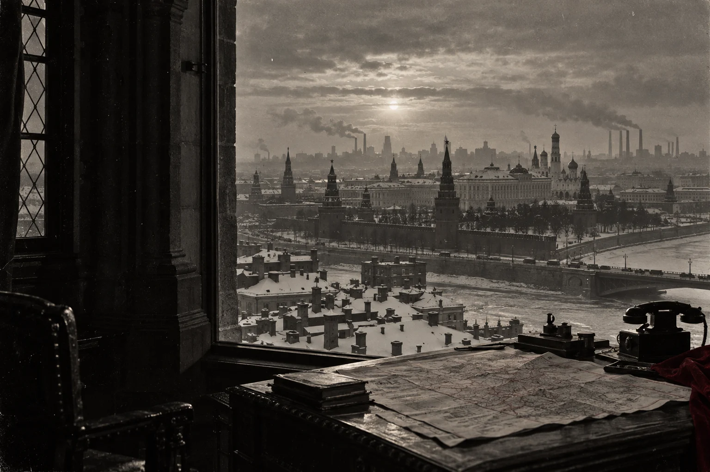
已完成
56之路：苏维埃
克里姆林宫 · 窗前办公桌
cover场景依据
从书房眺望冬日莫斯科，卷首海报。
v1.11 配图仍在制作，非已发布最终版。本页展示本地制作进度，待生成与待修正内容尚未全部完成。
共 488 个场景绑定，含 473 个新增场景、既有卷首与 14 个结局。已完成项须有实际图片和审核认可记录；既有卷首与结局沿用已认可素材。待修正项另行标记，不计入已完成数。图片为 AI 生成的历史演绎。
已完成 369 · 待修正 2 · 待生成 117 · 共 488 个场景
当前显示 369 个场景 · 已完成

克里姆林宫 · 窗前办公桌
cover从书房眺望冬日莫斯科，卷首海报。
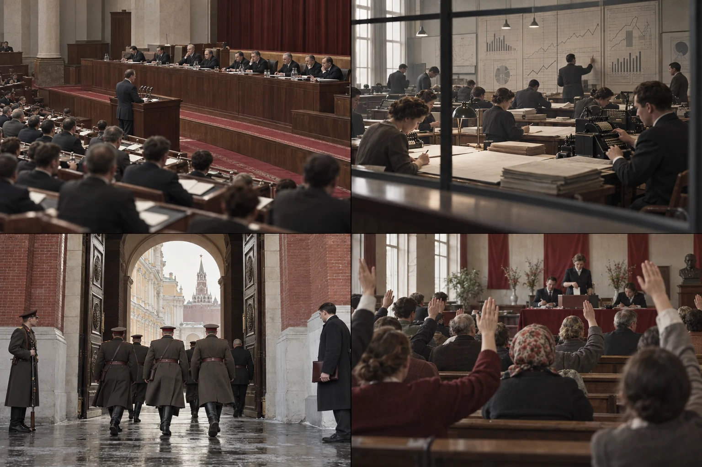
1956 年 · 所选道路的国家生活
ending/khrushchev集体领导，以公开问责或渐进调整走向 1956
1956 年 · 所选道路的国家生活
ending/beria秘密警察换成了规划委员会的图表
1956 年 · 所选道路的国家生活
ending/military军队走进了克里姆林宫
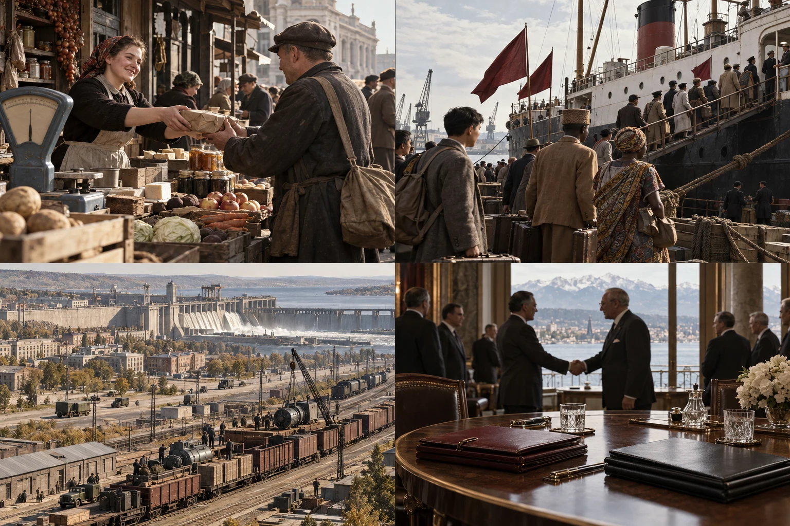
1956 年 · 所选道路的国家生活
ending/right市场被政权自己请了回来
1956 年 · 所选道路的国家生活
ending/left这个国家不再是一个国家，而是一场运动
1956 年 · 所选道路的国家生活
ending/soviet最高苏维埃第一次真正投票
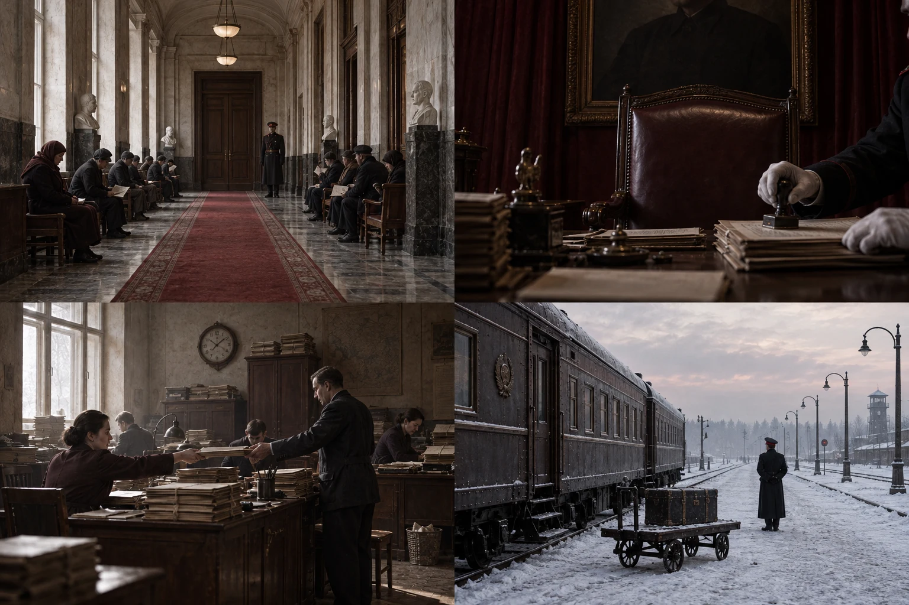
1956 年 · 所选道路的国家生活
ending/stalin-quiet恐惧退潮，集中的权力结构延续
1956 年 · 所选道路的国家生活
ending/eternal画像还挂在那里
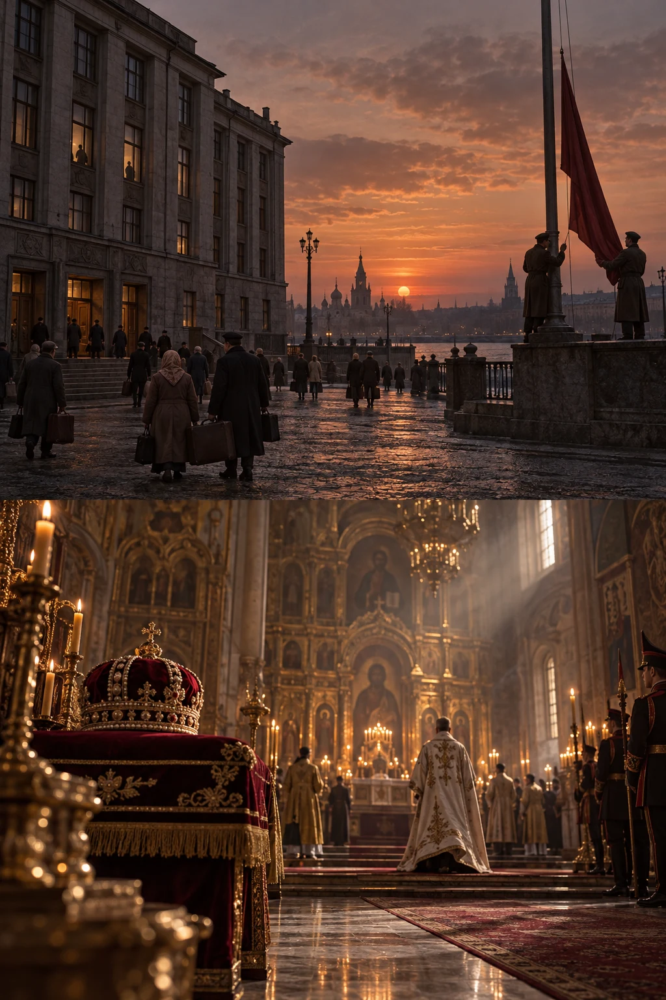
1956 年 · 所选道路的国家生活
ending/dusk联盟开始一块一块地掉下来
1956 年 · 所选道路的国家生活
ending/rome旧王朝在废墟上复辟
1956 年 · 所选道路的国家生活
ending/island没有人愿意来莫斯科了
1956 年 · 所选道路的国家生活
ending/comecon经互会变成了一个真正的经济体
1956 年 · 所选道路的国家生活
ending/detente两个阵营改用开会解决问题
1956 年 · 所选道路的国家生活
ending/mediocre1956 年和 1936 年没有区别
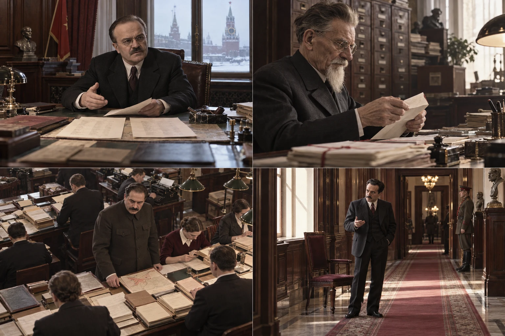
克里姆林宫 · 书房
event/0-1/round/0新年的雪还压在窗台上。十年前的争论，被重新整理成了两列姓名。 烟斗搁在没有点火的烟灰缸上。 柯巴，这两年，许多信仍在问列宁格勒的事。有人把旧日的争论写成了指控。你想先听他们说，还是先让机关查？
中央办公厅
event/0-1/round/1加里宁把一封求情信折回原样。 {address}，下面的人需要知道，昨天说过的话，今天还容不容许解释。
书记处
event/0-1/round/2组织表格上没有“犹豫”这一栏。 地方干部问，该把两派一视同仁，还是分开处理？
会后走廊
event/0-1/round/3脚步声在门外停了一下。 约瑟夫，打掉一派，另一派未必就属于我们。你准备给谁留一把椅子？
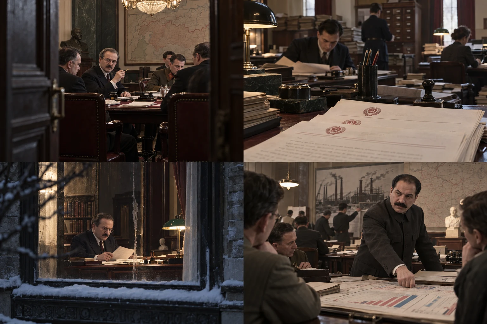
政治局会议室
event/0-1/round/4他拿起铅笔，等你先开口。 讨论的边界必须说清。我们是要服从、平衡，还是允许争论本身存在？
办公厅
event/0-1/round/5三份通知用了同一张抬头纸。 请明确执行范围。地方会把您的措辞理解成命令。
书房
event/0-1/round/6窗上的雪融成了一道水痕。 那么，明天名单离开这间屋子时，附在上面的究竟是什么？
计划委员会
event/0-2/round/0报表上的钢水还在增长，住房申请却已经装满第二个柜子。 他用指关节敲了敲钢产量那一栏。 {address}，机器、住房、武器，不能都排在第一位。新增投入先往哪里送？
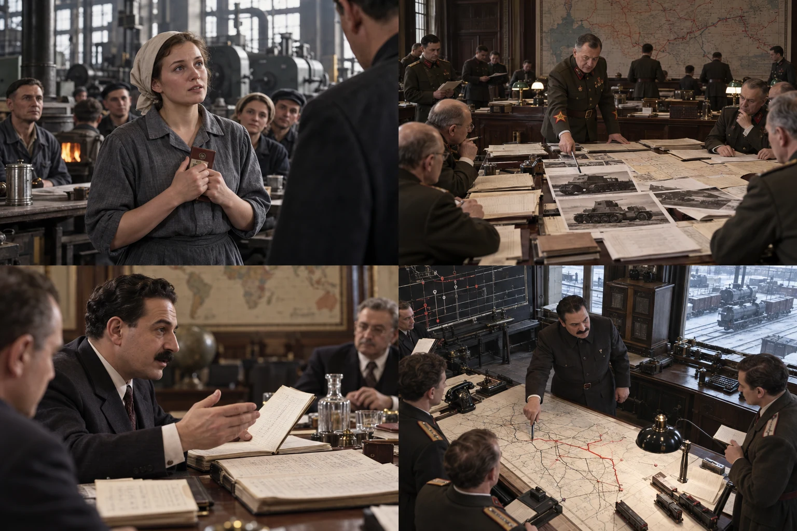
工厂休息室
event/0-2/round/1安娜把工作证攥在掌心。 斯大林同志，我们这一班已经提前完成指标。宿舍的窗户，能在下雪前装上吗？
总参谋部
event/0-2/round/2装甲车照片压在预算表上。 新工厂也可以先造军需。您愿意为下一场战争提前挤出多少空间？
采购会议
event/0-2/round/3进口机床与面粉分别列在两本账里。 约瑟夫，国外专家愿意来，但要付钱。我们买速度，买生活，还是买技术？
铁路调度室
event/0-2/round/4一条新支线在地图上戛然而止。 运输只能先保证一头。给我一个不会在明天改变的次序。
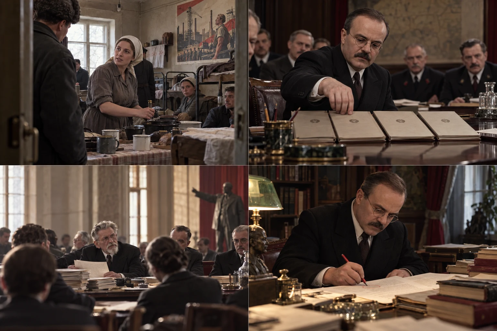
厂区住房
event/0-2/round/5墙上贴着一张五年计划宣传画。 这张画上的新生活，是从我们这一代开始，还是还要再等？
政治局
event/0-2/round/6四份方案的封皮一模一样。 请把优先次序留下来。各部门会照这个次序争取下一年的每一吨钢。
宪法委员会
event/0-3/round/0一年的改稿摞在桌角。每一版都写着人民，却没有一版写清人民如何让纸上的承诺生效。 他翻到普遍选举权的一页。 {address}，这些权利，准备写进正式文本吗？
书房
event/0-3/round/1莫洛托夫把“反对派”三个字圈起来。 新制度同时给了我们界定敌人的语言。您愿意接受这种公开的法理形式吗？
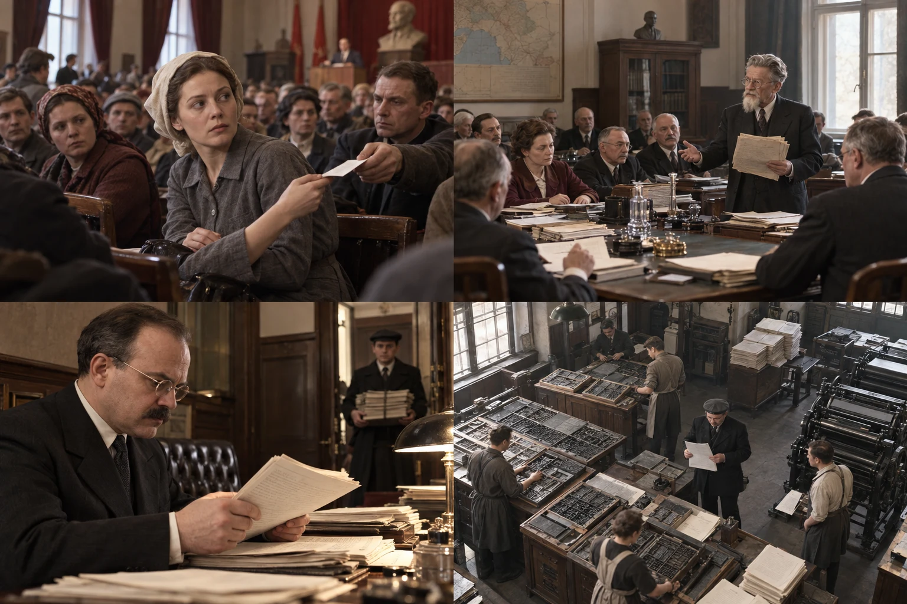
意见征集会
event/0-3/round/2有人从后排递来一张字条。 如果写下了，地方机关就得照着办，对吗？
委员会
event/0-3/round/3纸页边缘已经起毛。 草案不能永远是草案。我们需要一个明确的程序。
政治局
event/0-3/round/4门口等着送排字稿的人。 通过会带来威望，也会留下可以被引用的承诺。
出版办公室
event/0-3/round/5铅字工人还没有开始排版。 照哪一份通知报纸：公布，还是继续征求意见？
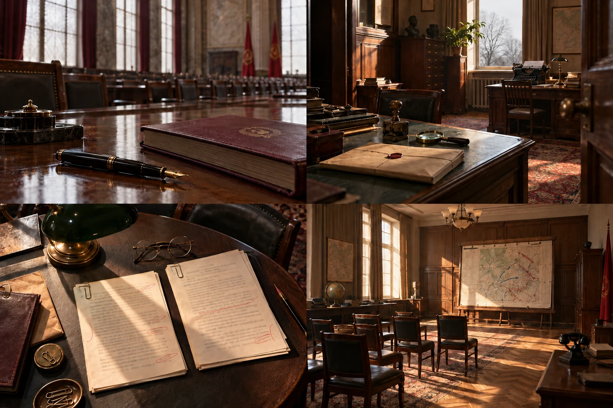
大会准备室
event/0-3/round/6他把笔递到你手边。 最后一次核对：今天让它成为法律，还是让它继续等待？
克里姆林宫
event/1-1/round/0一封写着德语的材料被放到桌上。印章很清楚，来历却没有人说得同样清楚。 他避开了你的目光。 {address}，文件指控元帅参与阴谋。您要先认可指控，还是先查文件来源？
小会议室
event/1-1/round/1日期被用红笔改过一次。 口供和原件并不完全吻合。继续审，可能得到更多名字。
军方汇报室
event/1-1/round/2代表站得很直，声音却发干。 若一次撤走这些人，来年演习将没有足够的高级指挥员。
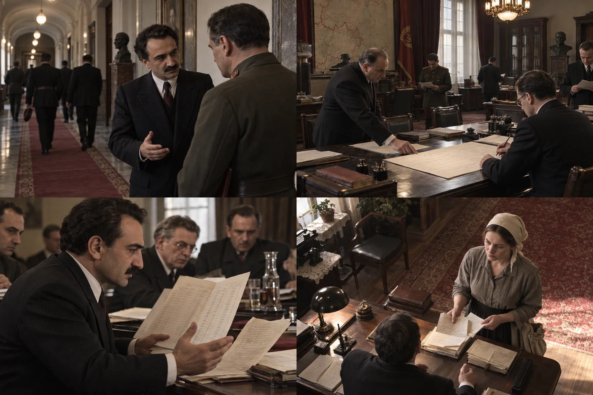
会后走廊
event/1-1/round/3他等其他人都走远才开口。 约瑟夫，保住元帅，也就是容许一个有威望的人继续站着。你信得过这种风险吗？
办公厅
event/1-1/round/4三种处置范围留着空格。 请给出范围。执行机关会逐字照办。
农业工作会议
event/1-2/round/0农庄的报表按时到了。农民的来信却要绕过几层办公桌，才能送到你面前。 粮食数字和工业贷款并列写着。 {address}，征购收入支撑工业。再提高指标，谁来承担缺口？
来访接待室
event/1-2/round/1安娜带来故乡亲人的信。 村里说，报上去的收成，比地里真正长出来的多。
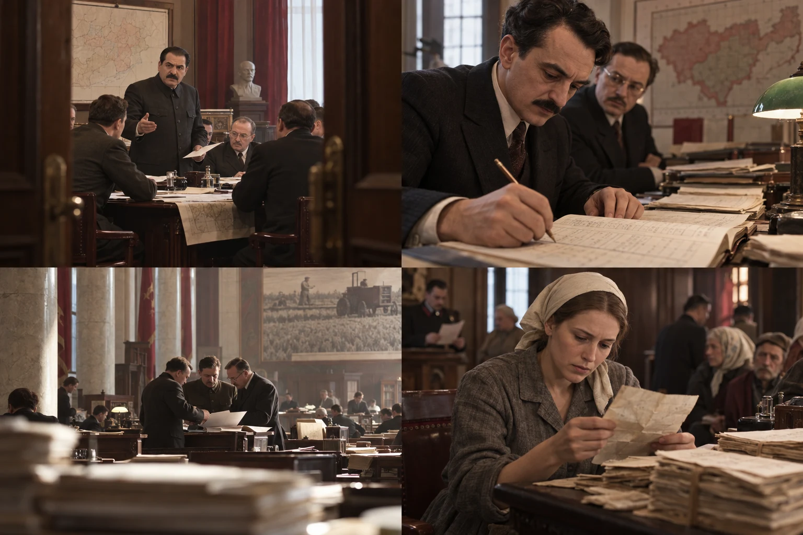
书记处
event/1-2/round/2干部把没完成的指标称为思想问题。 地方要一个统一口径。继续推进，还是留出余地？
小范围商议
event/1-2/round/3他在账本上添了一行家庭口粮。 让农户保留一些土地，会降低眼前征购，却可能减少下一年的逃荒。
农业部门
event/1-2/round/4三份实施时间表相差很远。 是立即完成、分期完成，还是退回原先的生产关系？
接待室
event/1-2/round/5一封信没有落款，只写着村名。 他们问，种下去的东西，还能不能留一点给孩子。
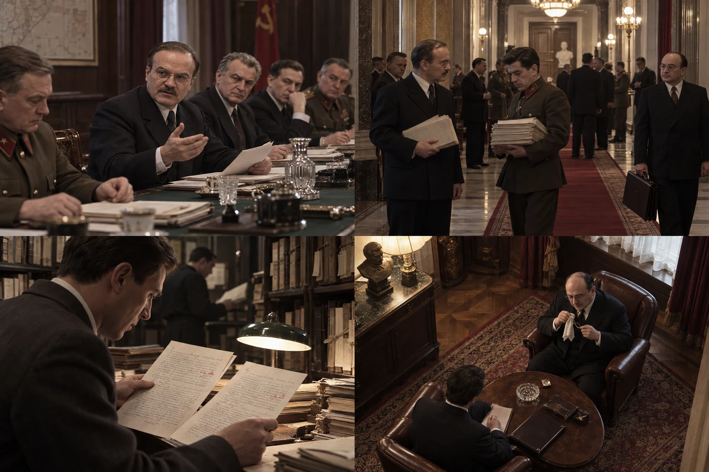
政治局
event/1-2/round/6会议室里很久没有人动杯子。 现在决定的，不只是粮食往哪里去，还有谁能够留在土地上。
政治局
event/1-3/round/0叶若夫的报告越来越厚。走廊另一头，贝利亚拿着薄得多的一只公文包。 他念到“配额”时停了一下。 {address}，内务部已经按地区下达数字。我们还要以这种方式衡量工作吗？
档案室
event/1-3/round/1两份口供连错别字都一样。 这些材料需要复核。复核会打断现行的办案节奏。
书房外间
event/1-3/round/2贝利亚摘下眼镜，慢慢擦拭。 亲爱的斯大林同志，问题不在于名单厚薄，而在于谁能把事情做得准确。
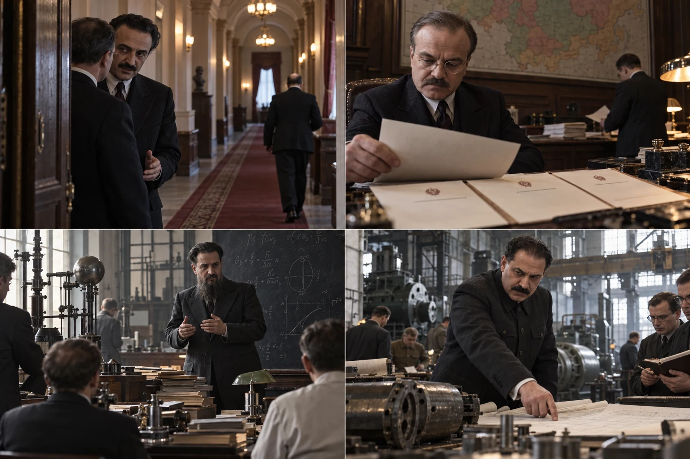
走廊
event/1-3/round/3他看了一眼贝利亚离开的方向。 换一个人，未必会让机关变小。你准备给新来的人多大的手？
书记处
event/1-3/round/4三个名字的位置已经留好。 继续任用、换人，还是把责任追到现任负责人？
物理研究所
event/1-4/round/0物理学家的备忘录很薄，附在后面的供电估算却很厚。军用前景还只是一个大胆的设想。 黑板上有一行尚未得到验证的计算。 {address}，我们能说明研究值得做，还不能许诺什么时候有武器。
工业部门
event/1-4/round/1分离设备一项后面没有现货来源。 这会占用普通工厂的机器与电。准备给它多少优先权？
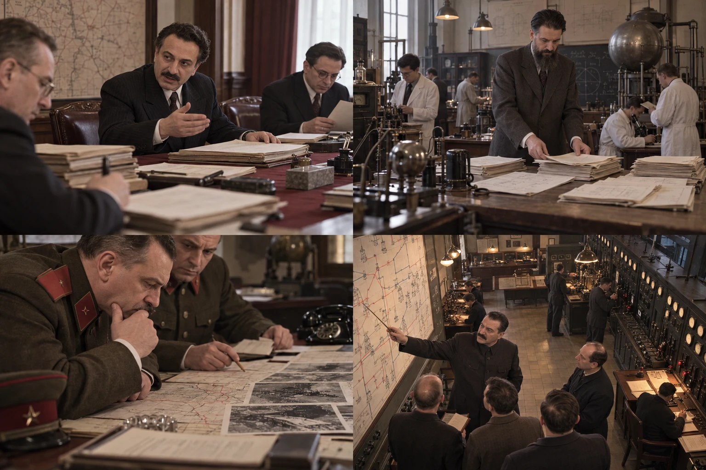
预算会议
event/1-4/round/2账本里没有“未来或许”这一栏。 投入现在就要扣，结果却可能很晚。您愿意承担哪一种等待？
实验室
event/1-4/round/3他把成功的推测与失败的记录分开摆放。 若没有稳定团队，研究每次都会从头开始。
军方会商
event/1-4/round/4军方代表盯着“潜在军用”四个字。 把它当长期战略项目，还是普通基础研究？
电力调度室
event/1-4/round/5另一座工厂也在等同一批设备。 一旦排进优先序列，就要有人向后退。
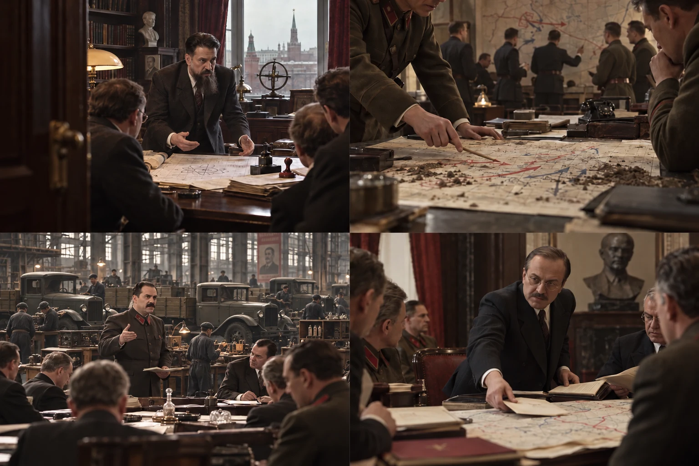
书房
event/1-4/round/6科学家没有去碰桌上的印章。 请给一个我们能照着做、也能照着解释失败的承诺。
总参谋部
event/1-5/round/0演习的泥土还粘在图纸边上。每一套理论，都要求另一种工厂和另一种军官。 地图上的箭头彼此冲突。 {address}，下一轮训练以什么作为军队的骨架？
军工会议
event/1-5/round/1车辆、无线电和火炮挤在同一份订单上。 请先确定最不能削减的一项。
政治局
event/1-5/round/2他把组织条例放在作战图旁。 将领需要多大的临机权？这也是政治问题。
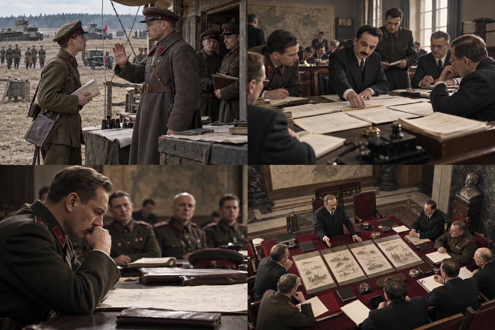
训练场
event/1-5/round/3一个传令兵被拦在指挥所外。 要让命令跑得更快，还是让命令受到更多监督？
预算协调室
event/1-5/round/4他把铅笔横放在四份草案之间。 每一种军队都要吃饭。选定主轴，其他项目就得后退。
总参谋部
event/1-5/round/5军官等待你对演习失败的解释。 下一次演习，我们奖励什么样的指挥员？
中央会议室
event/1-5/round/6四份方案已经无法同时实施。 现在留下哪一份，决定战时的第一反应。
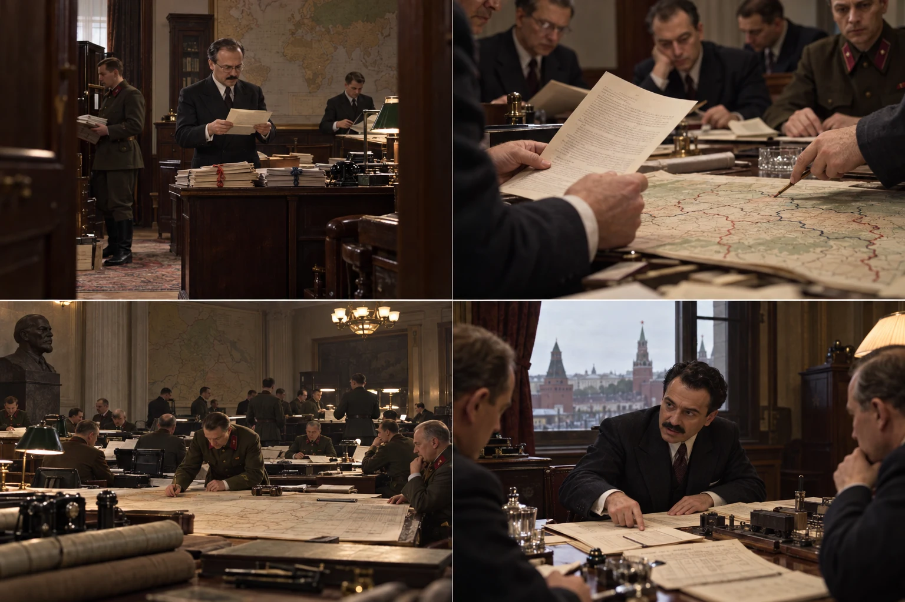
外交办公室
event/2-1/round/0外交电报每夜送到，铁路时刻表却比任何一方的承诺更明确。 他把柏林和伦敦的电报分开放。 {address}，我们先认真回答哪一边？
谈判记录室
event/2-1/round/1代表把“安全保证”重复读了两遍。 对方要求的代价，需要明确到地图上。
总参谋部
event/2-1/round/2边境线被铅笔描得很粗。 如果谈判失败，军队依靠谁，依靠什么争取准备时间？
小会议室
event/2-1/round/3出口合同与军备清单放在一起。 眼前的喘息，和将来的信用，您准备怎样交换？
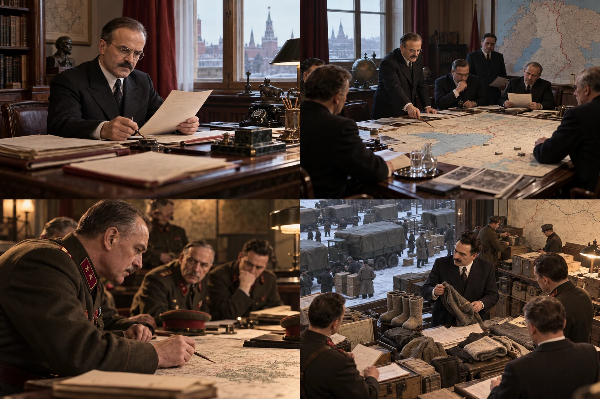
书房
event/2-1/round/4莫洛托夫把收件人一栏留白。 请给出我们的路线。此后每一封电报都会沿它发出。
外交办公室
event/2-2/round/0列宁格勒被画在地图边缘。三十二公里，在纸上只有一段指甲那么长。 芬兰方面的答复摊在桌上。 {address}，他们拒绝了。我们的目标需要重新说清。
作战室
event/2-2/round/1军方代表没有说出“两周”之后的安排。 若现在动手，目标是首都、地峡，还是整个国家？
后勤协调室
event/2-2/round/2冬装与运输车还没有配齐。 地图上的距离，不等于士兵要走的距离。准备承担多少代价？
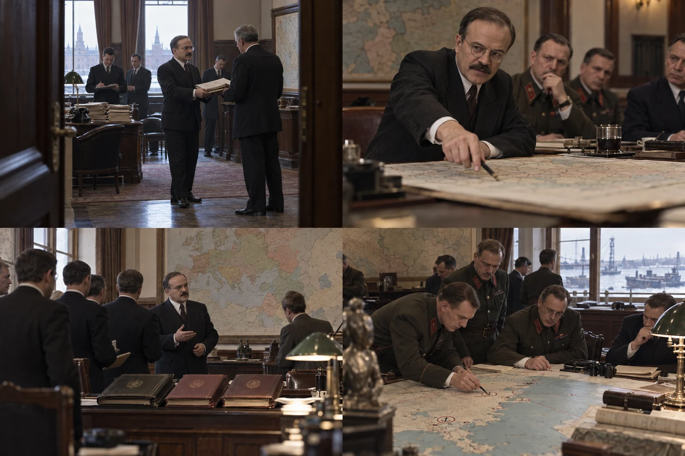
外交部门
event/2-2/round/3一份有关汉科的提案被重新送回。 如果保留谈判，仍有交换的空间。
政治局
event/2-2/round/4他把地图推到你面前。 给出边界。军队与外交官需要同一个答案。
外交办公室
event/2-3/round/0从波罗的海到黑海，新的边界草案背后都有不同语言的居民。 地图旁摆着三本不同的条约。 {address}，我们需要的是缓冲，还是直接的统治？
作战会议
event/2-3/round/1参谋把港口一一圈出来。 驻军若没有当地合作，就需要长期保护自己的补给线。
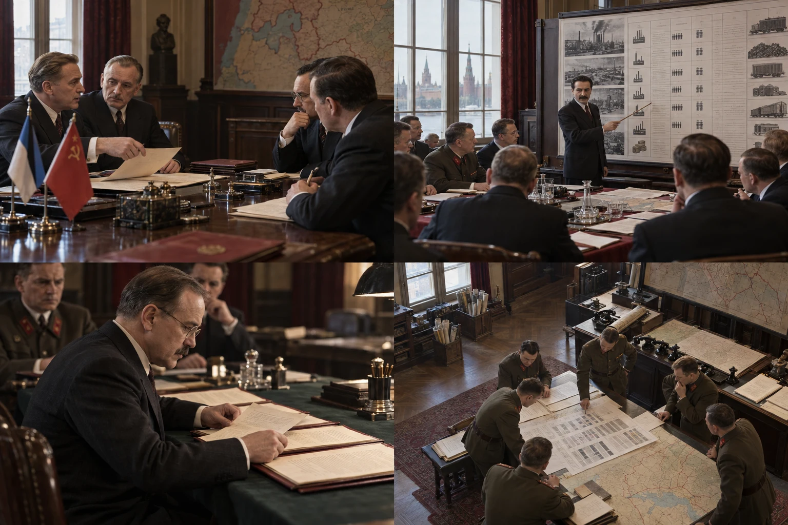
条约审阅室
event/2-3/round/2对方代表坚持保留本国签字人的名字。 协定可以分层推进，也可以由最后通牒一次完成。
经济会议
event/2-3/round/3接收工厂与供应城市列在同一页。 把产业接过来，也就要把人的生活接过来。
政治局
event/2-3/round/4三份草案同时打开。 最后，请明确我们准备承认谁的决定权。
总参谋部
event/2-4/round/0评估报告没有署名。最后一页写着：与敌军的第一次会战，不能再靠纸面数字支撑。 缺员的格子被涂成灰色。 {address}，经验不足和政治不安，先补哪一头？
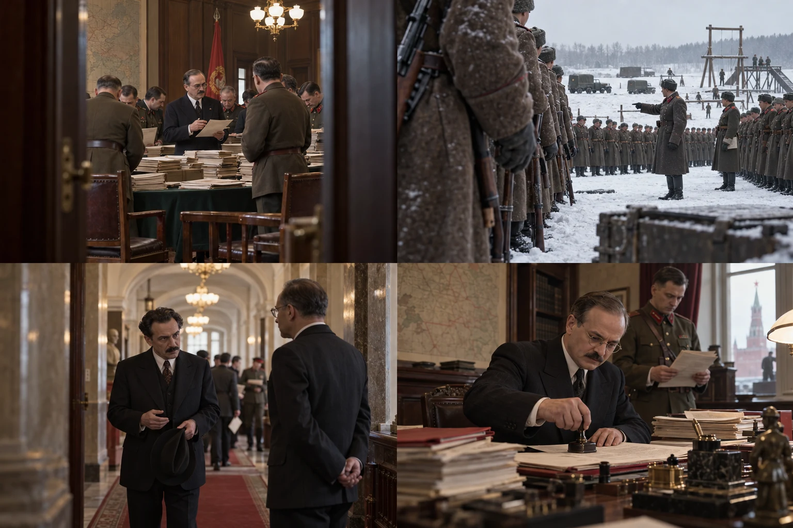
中央会议室
event/2-4/round/1营地里的军官档案被重新调出。 放回来的人，仍记得当初是谁签的字。
训练营
event/2-4/round/2队列在雪地里排好。 战场上，什么应当高于一切：判断、监督，还是不许退却？
会后走廊
event/2-4/round/3他把帽子拿在手里。 怎样的服从，值得我们让士兵付出这样的代价？
书记处
event/2-4/round/4印章旁摆着新的任免表。 请确定红军整顿的主轴。
图片尚未生成；图像服务额度恢复后继续制作。
最高统帅部
event/3-1/round/0电话铃没有停过。每一次接起来，地图上的同一条线都已经向东移动。 有一封电报只剩下半句话。 {address}，部队请求明确命令。阵地、建制、反击、工厂，先保哪一个？
图片尚未生成；图像服务额度恢复后继续制作。
调度电话
event/3-1/round/1空车皮和撤退队伍正在抢同一段铁路。 一旦下令，我们就不能同时完成所有任务。
图片尚未生成；图像服务额度恢复后继续制作。
作战图前
event/3-1/round/2参谋已经把电报纸装进打字机。 请给前线一句可以执行的话。
图片尚未生成；图像服务额度恢复后继续制作。
统帅部电话
event/3-2/round/0粮食账本上的日期比任何战报都迫近。城里的灯一盏接一盏熄灭。 接线员把声音调到最大。 {address}，铁路断了。先争取湖上的通道，还是改变守城任务？
图片尚未生成；图像服务额度恢复后继续制作。
列宁格勒来电
event/3-2/round/1电话里能听见空袭警报。 工厂还在生产，可城里还有孩子。列车先装谁？
图片尚未生成；图像服务额度恢复后继续制作。
运输调度室
event/3-2/round/2湖面运输和疏散计划摊在桌上。 车辆不足。今天必须给一个排在第一位的任务。
图片尚未生成；图像服务额度恢复后继续制作。
情报室
event/3-3a/round/0东京的报告被译成俄文。相信它，意味着把远方的防线搬到眼前。 密电上没有可以公开的署名。 {address}，情报说日本转向南方。调兵之前，是否还需要一张外交保证？
图片尚未生成；图像服务额度恢复后继续制作。
外交办公室
event/3-3a/round/1条约文本被翻到中立条款。 纸面承诺不能代替情报，但会改变对方公开行动的代价。
图片尚未生成；图像服务额度恢复后继续制作。
铁路部门
event/3-3a/round/2一条横跨大陆的线被涂成红色。 列车一旦出发，几周内无法原路补回。
图片尚未生成；图像服务额度恢复后继续制作。
统帅部
event/3-3a/round/3两张地图之间只放着一份情报。 若判断错了，远东将承担我们的下注。
图片尚未生成；图像服务额度恢复后继续制作。
书房
event/3-3a/round/4他等着决定先发哪一份电报。 是先办条约，还是让情报本身成为依据？
图片尚未生成；图像服务额度恢复后继续制作。
克里姆林宫
event/3-3b/round/0机关的箱子已经钉好，标签朝着古比雪夫。红场上，士兵还在练习怎样踏过结冰的路面。 所有人都在等你是否收起桌上的文件。 约瑟夫，最高领导人留在哪里，会比公告更早传遍全城。
图片尚未生成；图像服务额度恢复后继续制作。
统帅部
event/3-3b/round/1朱可夫没有看装好的箱子。 {address}，我需要的是明确指挥权，不是更多同时到来的命令。
图片尚未生成；图像服务额度恢复后继续制作。
办公室
event/3-3b/round/2行程表、阅兵安排、授权令摆在一起。 请给出今晚的安排。
图片尚未生成；图像服务额度恢复后继续制作。
外贸部门
event/3-5/round/0清单上没有足够多的坦克，却有成千上万辆卡车。后勤军官看得比宣传员更久。 他指着轮胎和铝锭。 {address}，这些东西能让我们自己造的武器动起来。条件怎么答复？
图片尚未生成；图像服务额度恢复后继续制作。
外交办公室
event/3-5/round/1条款没有写进报纸准备使用的稿子。 接受、拒绝，或另付代价，都会留下战后的账。
图片尚未生成；图像服务额度恢复后继续制作。
后勤汇报
event/3-5/round/2参谋把缺车的单位逐个念出来。 宣传可以不用卡车，军队不能。
图片尚未生成；图像服务额度恢复后继续制作。
预算会商
event/3-5/round/3黄金出口的数字被写得很小。 若要结清账，我们拿到的物资就会少一些。
图片尚未生成；图像服务额度恢复后继续制作。
中央会议室
event/3-5/round/4译员等在门外。 请把答复留给外交官。
图片尚未生成；图像服务额度恢复后继续制作。
统帅部
event/3-6/round/0伏尔加河对岸的火光照在玻璃上。名字属于一个人，废墟里却挤着整个国家。 参谋将敌军两翼和城区分开标注。 {address}，把预备队填进城区，还是留给两翼？
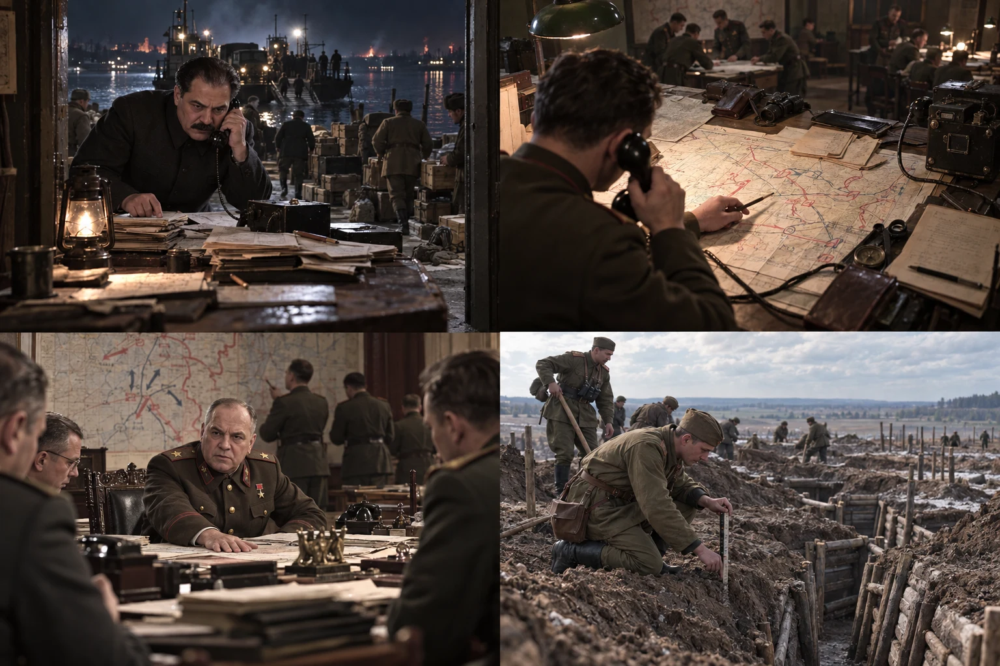
补给电话
event/3-6/round/1渡船的装载数字被反复更正。 同一批补给，要支持死守、撤出，还是正面突击？
作战室
event/3-6/round/2电话另一端的人等着命令。 请确定部队明天的任务。
总参谋部
event/3-7/round/0敌人的箭头已经被画出来。你不能知道，它究竟是计划，还是诱饵。 朱可夫把进攻日期压在掌下。 {address}，我们可以等他撞进来，也可以先动。
前线汇报
event/3-7/round/1地雷和铁锹的需求同时上报。 如果要守，工事现在就得开挖。
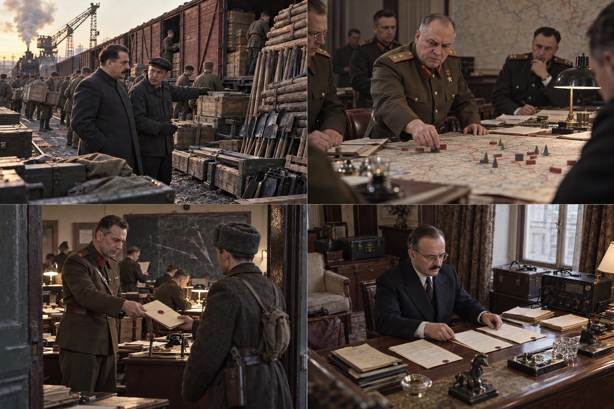
后勤部门
event/3-7/round/2火车上装的东西决定下一步能做什么。 优先运防御器材、突击补给，还是撤移车辆？
作战会议
event/3-7/round/3他把同一张图又摊开一次。 情报值得相信到什么程度，最终要由预备队的位置回答。
统帅部
event/3-7/round/4参谋把三个箭头分别擦淡。 请确定开战时我们的第一步。
代表团住处
event/3-9/round/0盟国的会谈桌很长。你要争取的，仍是另一片海岸上迟迟没有出现的士兵。 他把以往的许诺按日期排好。 {address}，这一次，我们怎样让对方回答时间表？
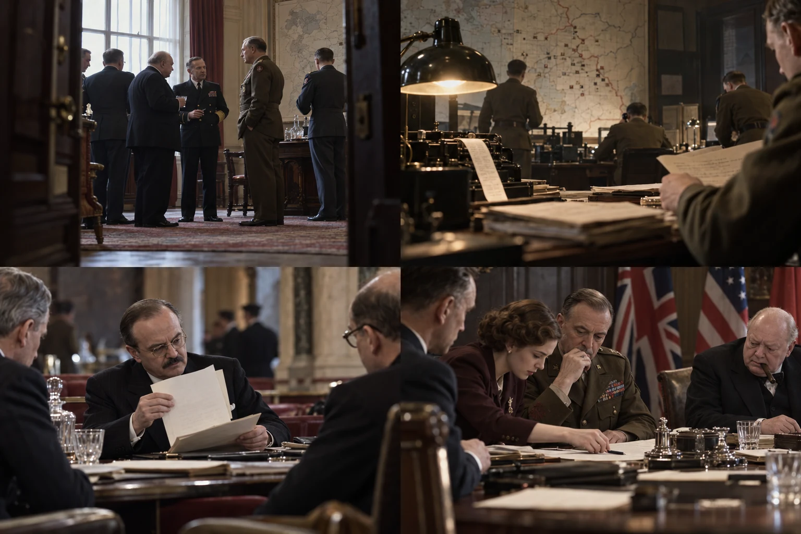
会谈间歇
event/3-9/round/1对方又提到了登陆艇。 他们说仍需准备。我们的答复是等待、威胁，还是另施压力？
军方联络室
event/3-9/round/2阵亡数字没有出现在外交公报里。 每推迟一季，东线就多承受一季。
小范围会商
event/3-9/round/3他把最强硬的一句话用纸遮住。 有些威胁说出去之后，盟国不会当作修辞。
会议室
event/3-9/round/4翻译把笔放到行间。 请给我们在桌上坚持的措辞。
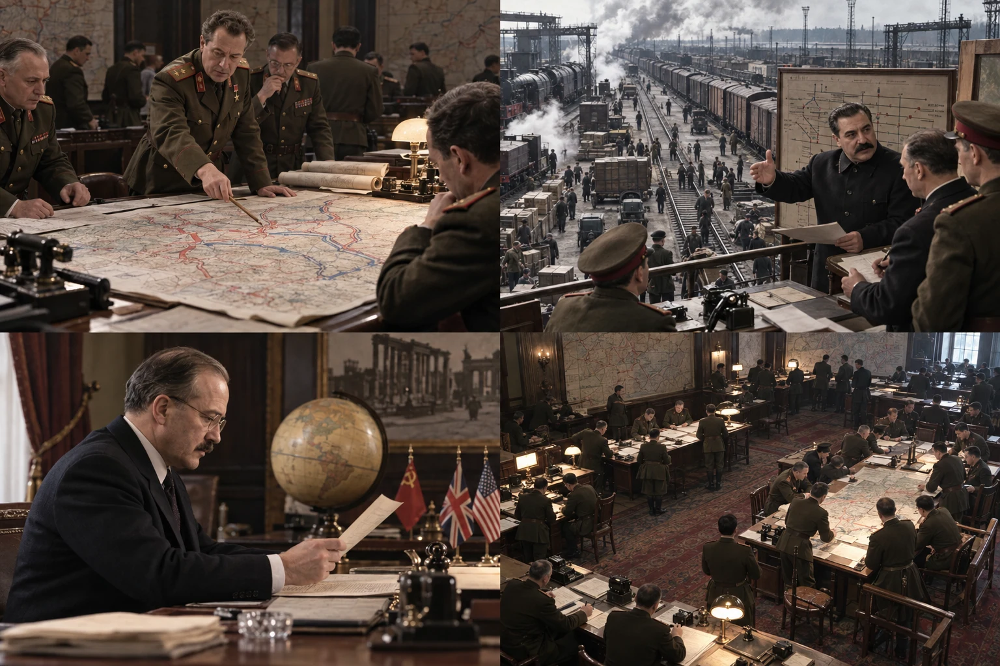
总参谋部
event/3-10/round/0两条进军路线都通向胜利，却不会通向同一张战后地图。 中央与南线的地图重叠在一起。 {address}，这次把主要力量压向哪里？
铁路部门
event/3-10/round/1两支集团军正在等同一条补给线。 主攻方向决定下一周的全部列车。
外交办公室
event/3-10/round/2他没有在军事地图上画线。 到达哪里，就会在哪里说话。
统帅部
event/3-10/round/3参谋等待预备队的去向。 决定之后，另一侧就要接受有限目标。
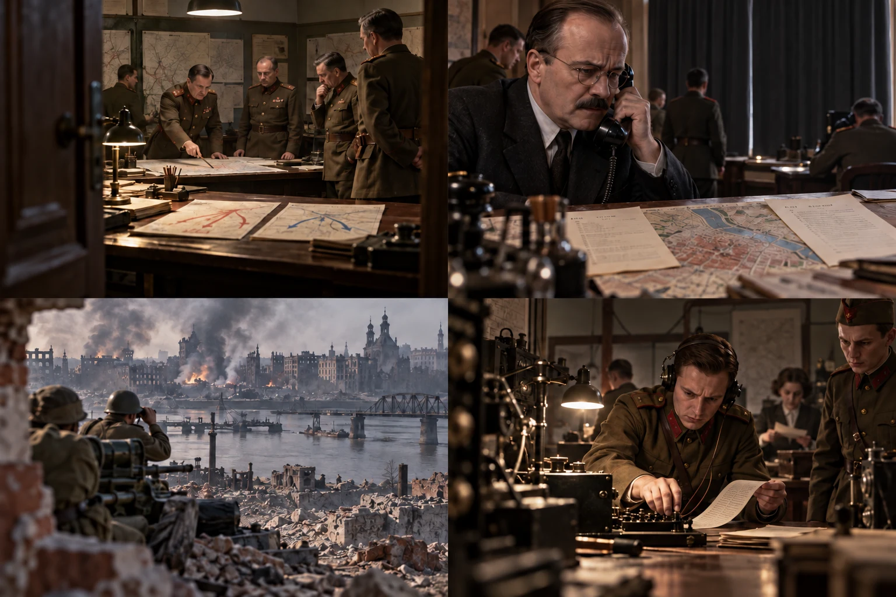
作战室
event/3-10/round/4两个代号分别打在不同纸页上。 请确定主攻方向。
统帅部
event/3-11/round/0河对岸传来枪声。来电中的人首先报出自己的组织，然后才请求弹药。 两份波兰名单被放在同一张地图旁。 {address}，他们请求支援，却未必接受我们的政治安排。
作战电话
event/3-11/round/1军方把渡河代价重新算了一遍。 支援需要真实部队，等待同样会有真实后果。
联络室
event/3-11/round/2联络员等着发出最后一份电报。 请给河对岸答复。
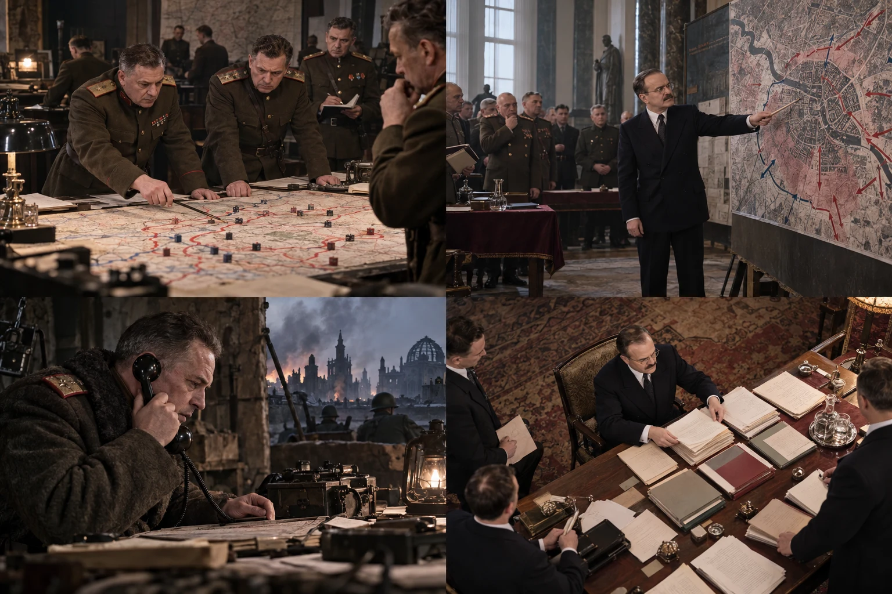
统帅部
event/3-12/round/0通往柏林的道路上，最后几公里比先前几百公里更拥挤。 两支盟军的位置被标在不同颜色里。 {address}，我们优先争取先到，还是把伤亡压下来？
作战图前
event/3-12/round/1他看着柏林，没有看城市里的街区。 谁先到，谁在下一张会谈桌上就多一个事实。
前线电话
event/3-12/round/2电话里有人问是否仍按原计划推进。 请明确最后阶段的优先次序。
代表团住处
event/3-13/round/0战场已经结算，会议桌上仍有另一种争夺。每个国家的名称后面，都跟着一份政府名单。 他把各国名单分成几叠。 {address}，我们要求他们成为怎样的邻居？
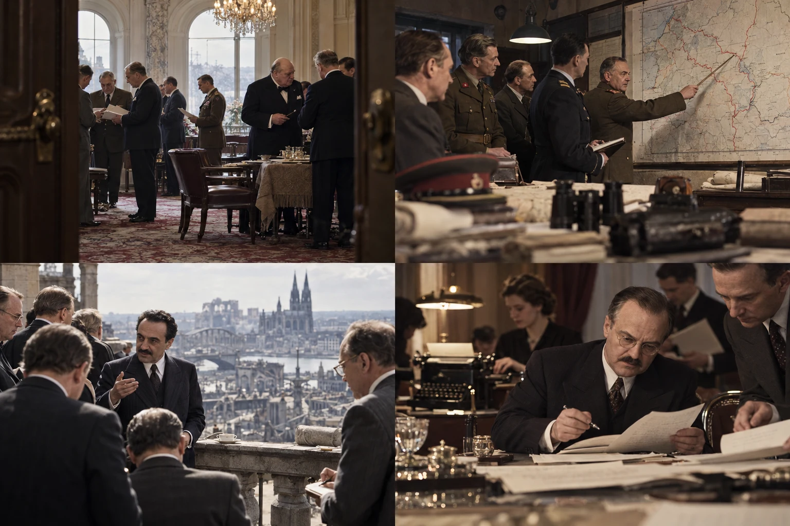
会谈间歇
event/3-13/round/1“自由选举”在几份译稿里有不同的重音。 同一句承诺，各方准备怎样解释？
驻军联络室
event/3-13/round/2军方代表指出撤军后的缺口。 政治安排必须回答：谁来保证边境安全？
经济会商
event/3-13/round/3贷款和物资成为另一份条件表。 他们会依靠我们，但依靠到什么程度？
会谈室
event/3-13/round/4打字机等着最后一组措辞。 决定他们的制度，还是留下他们自己的选择空间？
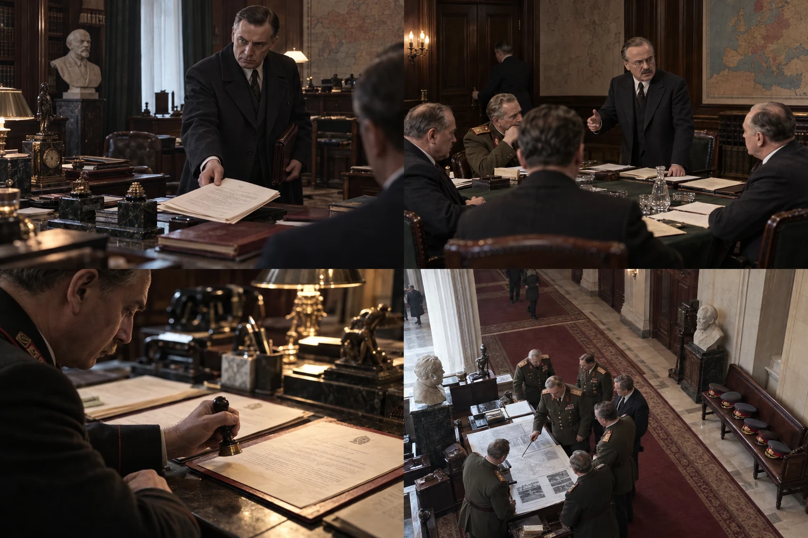
书房
event/x-left/round/0战后的名单换了一种排列方式。这一次，被排列的是政治局。 调查员只把纸推到你面前。 斯大林同志，一些人正在争取军方支持。是立即抓捕，还是留出政治安排？
小会议室
event/x-left/round/1莫洛托夫把门关上。 柯巴，让出一部分决策权，和等别人拿走它，是两回事。
办公厅
event/x-left/round/2两份命令都还没有盖章。 给安全机关发令，还是召集新的联合会议？
政治局外间
event/x-napoleon/round/0重建计划第一次以总参谋部的抬头送来。它的每一项工程，都附着一项任命。 元帅们的帽子放在同一条长凳上。 {address}，军方请求直接参与重建。
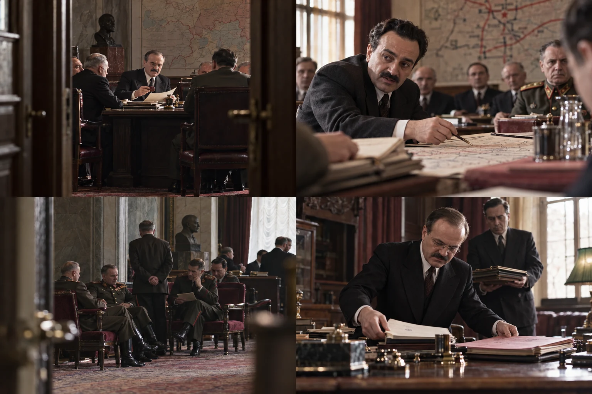
政治局
event/x-napoleon/round/1他把提案上的军事印章翻过去。 效率之外，这件事会给他们留下什么地位？
重建会议
event/x-napoleon/round/2运输和粮食都需要执行者。 军队能做很多事，但做完之后会不会离开？
小会议室
event/x-napoleon/round/3军方代表等待明确的任期与权限。 让我们参与行政，还是把部队全部交回军营？
书记处
event/x-napoleon/round/4任命表与退役调令分别放好。 您仍在最高席位上。今天决定的是谁能坐到您身边。
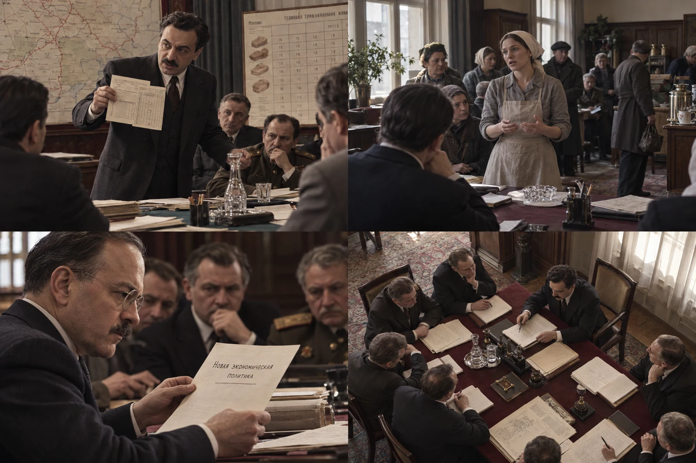
供应会议
event/x-right/round/0同一张配给单，既可以被解释成管理失误，也可以被解释成制度的边界。 他把城市配给和农庄报表并在一起。 {address}，我们究竟缺粮，还是缺把粮食送到柜台上的办法？
来访接待室
event/x-right/round/1安娜报出一家小店每天卖掉的数量。 市场上有东西，可我们不知道它明天还准不准开门。
政治局
event/x-right/round/2“新经济政策”被写在一张单独的纸上。 这个名字一旦重新出现，会改变党的解释方式。
小会议室
event/x-right/round/3他把许可范围逐条读完。 只讨论能缓解不满，实施才能检验供给。
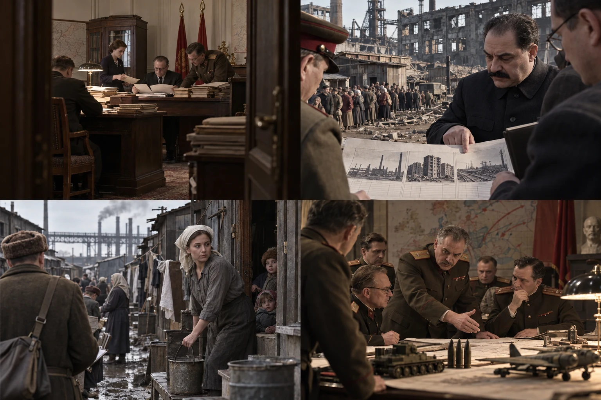
办公厅
event/x-right/round/4草案最后一页留着生效日期。 这是一份讨论材料，还是一份准许实施的通知？
重建委员会
event/4-1/round/0胜利没有给每个人带回一间房。工棚门口的队伍，和战前一样长。 工厂、住房和铁路分别列成三栏。 {address}，最先恢复什么，将决定未来几年谁先得到资源。
厂区工棚
event/4-1/round/1安娜把水桶挪开，给来访的人让路。 我们可以再多干一班，可孩子总不能一直住在这里。
军方汇报
event/4-1/round/2新的国际局势被写进扩产理由。 和平没有取消安全需要。军工是否仍然优先？
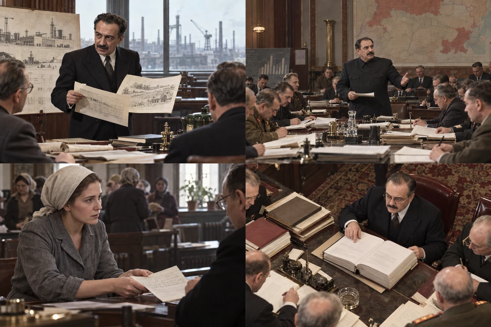
经济研讨
event/4-1/round/3企业自主权和农庄制度分别有一份草案。 允许地方决定一点事情，产量可能回来，控制也会变松。
计划会议
event/4-1/round/4每个部门都在问“先给多少”。 请把主次说明白。平均分配也是一种决定。
居民接待室
event/4-1/round/5她这次带来一张住房申请。 您答应的和平生活，准备从哪里开始？
政治局
event/4-1/round/6厚厚的计划书被翻到第一页。 我们先把哪一个承诺写成年度指标？
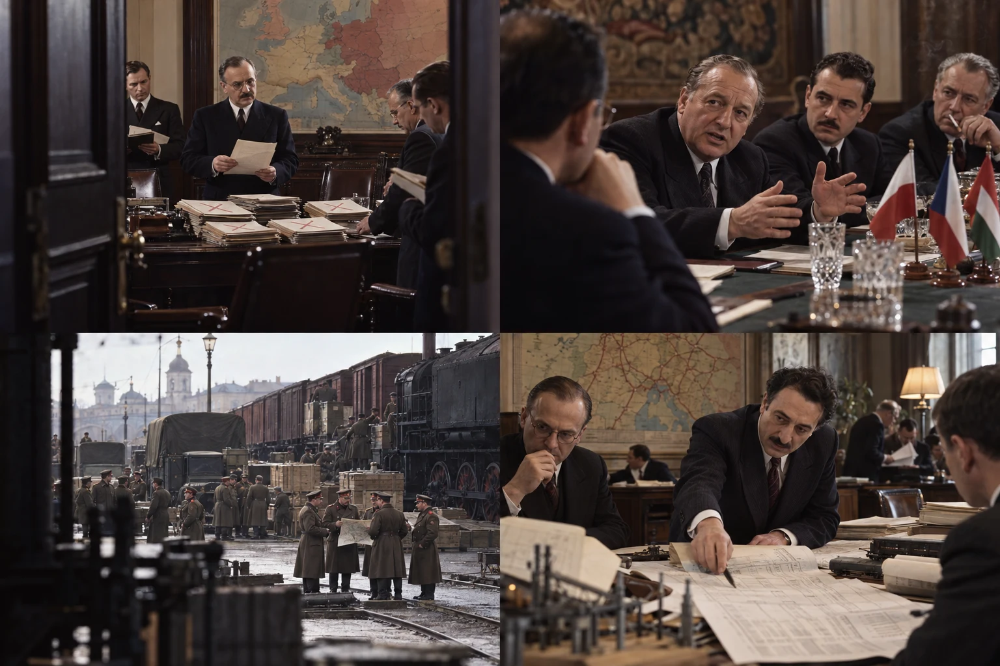
外交办公室
event/4-2/round/0邻国送来了新的政府名单。名字背后的人，并不都愿意照同一本说明书生活。 不同国家的名单被画上同样的符号。 {address}，我们要求一致到什么程度？
代表团会谈
event/4-2/round/1对方把本国战争经历讲了很久。 他们希望保留自己的联合政府与政治传统。
安全会商
event/4-2/round/2军方关心的是交通与指挥联系。 如果政体不同，安全合作如何维持？
经济协调室
event/4-2/round/3贸易清单比政治公报更长。 服从、协商与互利，哪一种会让他们留得更久？
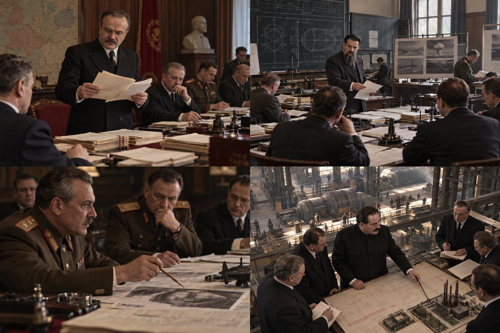
政治局
event/4-2/round/4每一份回电都在等同一项原则。 给各国的答案，必须能够彼此对照。
科研汇报室
event/4-3/round/0试验场的电报和联合国文件同时送来。一种力量的用途，不能只由它的当量回答。 他把已完成与未完成的项目分别划线。 {address}，下一步的成本比已经完成的工作更难估算。
战略会议
event/4-3/round/1军方把威慑写成一项长期任务。 我们准备追求更强的武器，还是有限的拥有？
工业部门
event/4-3/round/2供应清单直接连着民用电力。 新投入需要从现有工业里拿走产能。
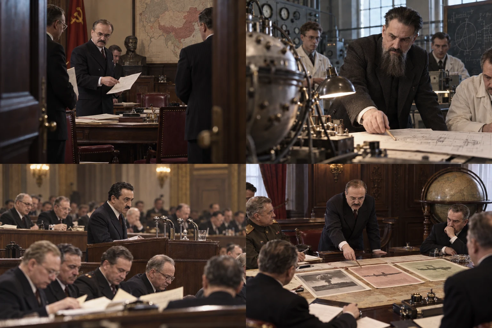
外交办公室
event/4-3/round/3裁军提案旁放着一份对华合作意见。 武器可以留在手里，也可以成为合作或谈判的筹码。
实验室
event/4-3/round/4他没有把推算说成保证。 方向确定之后，科研队伍要按它准备很多年。
预算会商
event/4-3/round/5账本列出的不只是设备。 请说明我们用生活中的什么，换取未来的哪一种安全。
中央会议室
event/4-3/round/6四份方案分别代表不同的冷战。 请确定核力量此后的用途。
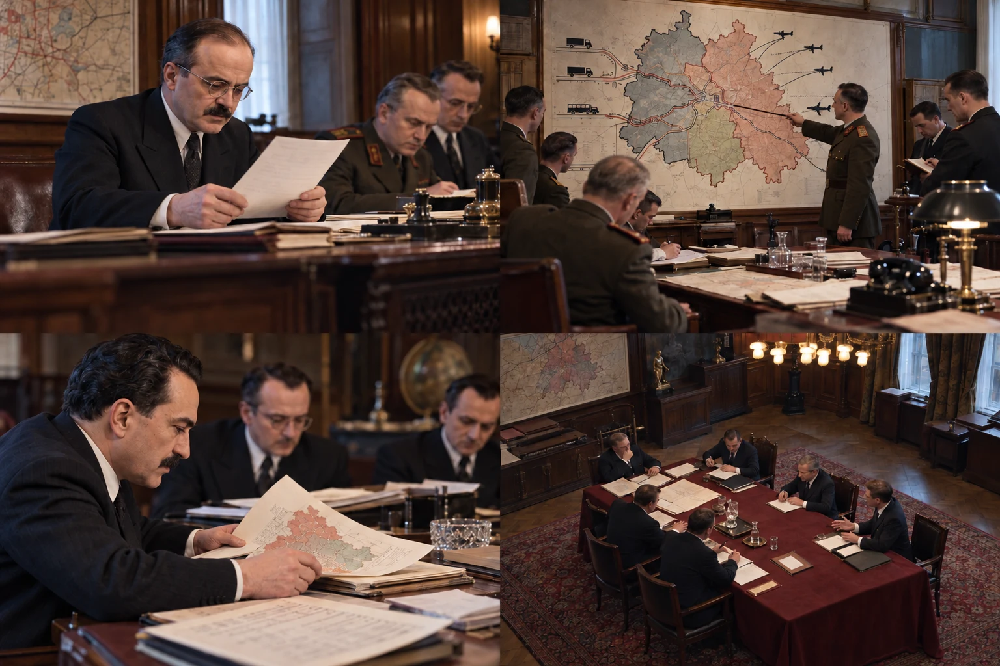
外交办公室
event/4-4/round/0两种马克在同一座城市流通。每一辆进入柏林的卡车，都变成了一份声明。 他把西方声明读得很慢。 {address}，是让道路说话，还是让谈判桌说话？
占领区联络室
event/4-4/round/1陆路、铁路、空中通道分开标注。 封锁陆路并不等于切断全部供应。
经济会商
event/4-4/round/2一份区域经济组织草案被抽出来。 我们也可以在账本上筑一道更持久的边界。
联络办公室
event/4-4/round/3对方表示可以继续谈。 但他们不会先公开认输。
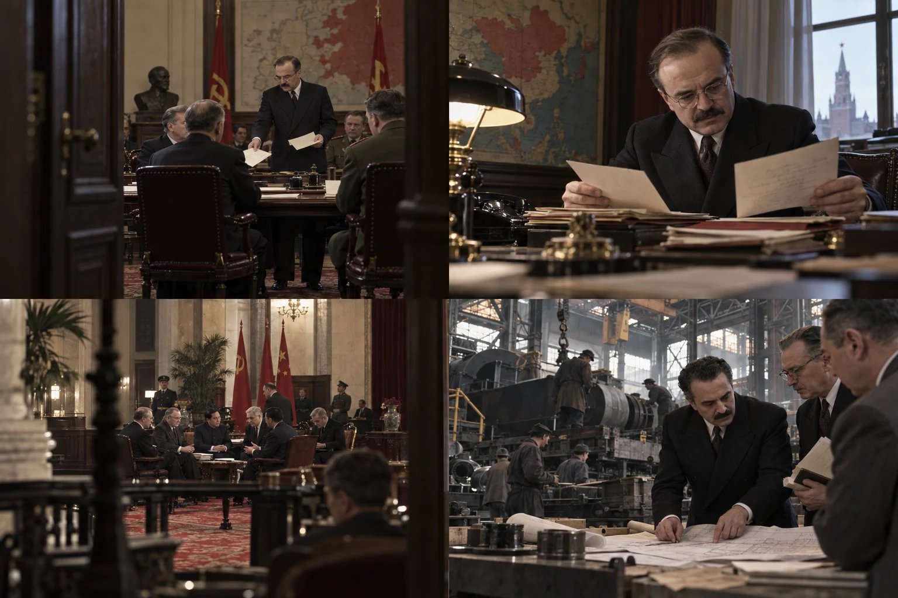
政治局
event/4-4/round/4三份通知的收件人不同。 下一步由交通管制、外交谈判，还是经济组织先行动？
外交办公室
event/4-5/round/0北京的消息送到莫斯科时，旧地图上的颜色已经不够用了。 他把双方来信分别放好。 {address}，我们准备把中国视作怎样的邻居？
会谈准备室
event/4-5/round/1来访代表要的不只是贺电。 他们希望谈专家、设备与长期承诺。
援助评估
event/4-5/round/2国内重建的订单还没有全部完成。 给出去的工厂，需要从我们自己的计划里移走。
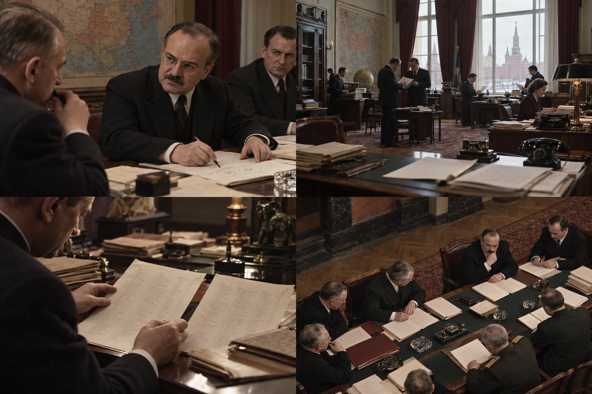
小范围会商
event/4-5/round/3他把“两个中心”写在纸边。 一个有力量的盟友，也会有自己的意志。
外交办公室
event/4-5/round/4译稿留着最后一段空白。 条约、两面联络，还是保持距离？
办公厅
event/4-6/round/0名单又回来了。纸上的人有些管理过城市，有些曾经在你身边看病。 他把两份名单并排放好。 {address}，这些案件是否继续按政治阴谋追查？
政治局
event/4-6/round/1没有人主动去翻最后一页。 扩大案件，会让安全机关再次主导干部的命运。
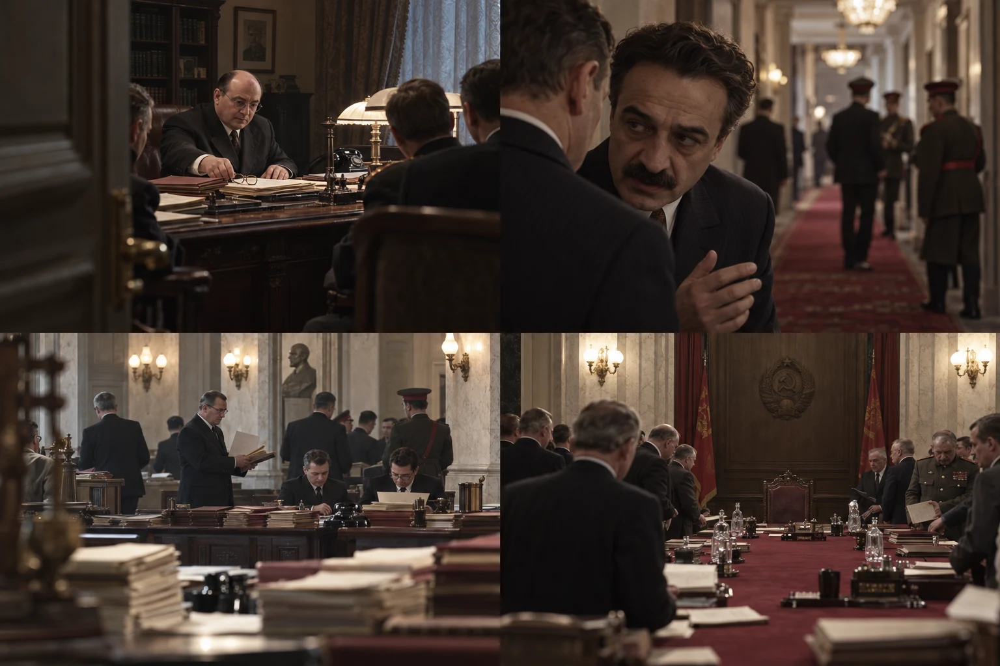
书房
event/4-6/round/2贝利亚把眼镜放在文件上。 亲爱的斯大林同志，若由我负责，范围可以比他们拟的更准确。
走廊
event/4-6/round/3他把声音压得很低。 约瑟夫，结束这些案子，会让人安心，也会让你失去一个排解疑惧的出口。
办公厅
event/4-6/round/4撤案、续查、专项授权分别写好了抬头。 请给出最后的处置原则。
中央会议室
event/5-1/round/0别墅的电话终于安静下来。你不再透过斯大林的眼睛看房间，而是停留在那把空椅子上方。 所有人的称呼都变得异常正式。 最高席位已经空出。各部门先接受怎样的权力分配？
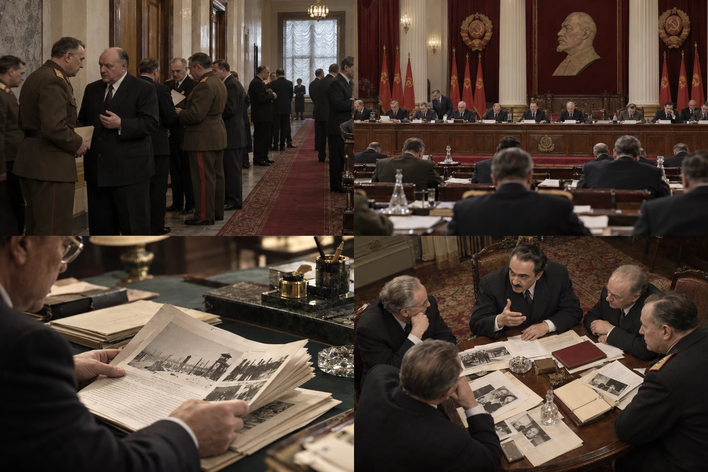
会间走廊
event/5-1/round/1门外的人等待的不是悼词，而是明天由谁签字。 怎样的承诺，能够让新的领导安排站住？
主席团会议
event/5-1/round/2秘书第一次把抬头中的名字留白。 综合各方表态，新的领导席位应当代表哪一条道路？
主席团
event/5-2/round/0一份关于过去的报告放在你面前。国家的记忆还在，你的位置已经换了。 秘书刻意没有朗读报告的结论。 {address}，过去的账，准备公开到哪一页？
小范围会议
event/5-2/round/1旧档案上的签名并不只有一个。 公开个人责任，也会让在场的人重新解释自己的沉默。
图片尚未生成；图像服务额度恢复后继续制作。
接待办公室
event/5-2/round/2安娜带来一封要求查明亲人去向的信。 我们想知道他究竟犯了什么罪，不只是想领到一张平反通知。
图片尚未生成；图像服务额度恢复后继续制作。
会前商议
event/5-2/round/3老干部的意见写得很克制。 阵营会问，过去那些命令还剩下多少正当性。
图片尚未生成；图像服务额度恢复后继续制作。
大会准备室
event/5-2/round/4封口的胶水还没有干。 今天送印的是完整报告、删节稿，还是不送印？
图片尚未生成；图像服务额度恢复后继续制作。
危机会议
event/5-3/round/0边境的坦克已经加满油。会谈桌上却有人第一次公开要求另一种生活。 两份报告对同一群人使用不同称呼。 {address}，把它当军事威胁、政治诉求，还是经济关系的危机？
图片尚未生成；图像服务额度恢复后继续制作。
边境联络电话
event/5-3/round/1指挥员只问了一次是否越境。 军队可以执行命令，但无法替我们决定成员国此后怎样相信联盟。
图片尚未生成；图像服务额度恢复后继续制作。
联络室
event/5-3/round/2谈判代表等着最后权限。 给他们坦克、撤军承诺，还是一份有分量的经济条件？
图片尚未生成；图像服务额度恢复后继续制作。
计划会议
event/5-4/round/0第一份报表和最后一份报表，使用了相同的纸。你已经能认出两者之间那些没有写下的名字。 各部门都把自己的需要称作未来。 {address}，1956年之后，我们把什么留给下一代？
图片尚未生成；图像服务额度恢复后继续制作。
战略汇报
event/5-4/round/1军方列出新的威慑需求。 安全依然需要投入。但准备把多少生活让给它？
图片尚未生成；图像服务额度恢复后继续制作。
居民接待室
event/5-4/round/2安娜的头发已有白色。 如果下一代不必再住工棚，这也算一种胜利吗？
图片尚未生成；图像服务额度恢复后继续制作。
国际工作会议
event/5-4/round/3另一批顾问准备出发。 世界的许多地方正在等我们的承诺。
图片尚未生成；图像服务额度恢复后继续制作。
预算协调
event/5-4/round/4三份承诺要从同一个总额中支付。 不能把同一笔资源许给三个人。
图片尚未生成；图像服务额度恢复后继续制作。
主席团
event/5-4/round/5秘书把你的前几次表态重新念了一遍。 请说明此前哪些承诺应当排在前面。
图片尚未生成；图像服务额度恢复后继续制作。
办公厅
event/5-4/round/6最后一页没有庆祝词，只有资源分配。 以什么作为这个时代的最后方向？
图片尚未生成；图像服务额度恢复后继续制作。
政治局小会议室
agenda/party-debate会议名单比过去长了一截。有人被重新邀请进来，却仍站在门口，等着看哪把椅子真正属于自己。 莫洛托夫把两份意见放在同一叠文件里，没有替你抽走其中任何一份。 {address}，他们愿意发言，但首先想知道，反对一份报告是否仍会成为另一份案件的材料。扩大讨论会让两派都有声音，也会使原来的核心更不安。这次会议，您准备怎样开？
图片尚未生成；图像服务额度恢复后继续制作。
内务机关会客室
agenda/nkvd-delegate贝利亚没有带随员。他把一只薄文件夹推过来，权限清单却比任务说明多了两页。 他先将眼镜擦净，才指向需要最高层签字的那一栏。 亲爱的{address}，专项任务如果仍要逐级请示，下面就只会互相等待。我可以让这些事安静下来，但要有一份明确的授权。您把多少信任交给我的部门，其他人也都会看见。
图片尚未生成；图像服务额度恢复后继续制作。
总参谋部人事处
agenda/purge-army名单旁压着几张调任表。参谋指给你看：被划去的每一个名字，后面都连接着一支尚在等待命令的部队。 有人把军帽摘下，双手放在膝上，始终没有碰桌上的钢笔。 {address}，安全机关要求调整这一批军官。名单可以很快执行，接替他们的人却需要时间熟悉参谋工作。若批准，我们会承担指挥经验流失的后果。是否下达本次清理命令？
图片尚未生成；图像服务额度恢复后继续制作。
中央组织部
agenda/purge-party履历表里夹着几封多年前的推荐信。推荐人与被推荐人的名字，现在出现在同一批审查材料中。 莫洛托夫读完最后一页，把每一处批注都朝向你。 {address}，组织部门提出处理这批干部。执行会削弱两派的力量，也会让留在岗位上的人更谨慎。地方正在等同一份通知，我们是否把名单作为正式处理范围发下去？
图片尚未生成；图像服务额度恢复后继续制作。
内务机关档案室
agenda/purge-nkvd调查员带来的不是外部检举，而是内务机关自己的签收册。几份已经归档的报告，被重新摆到灯下。 他压低声音，把一张副本留在你面前。 {address}，让内务部审查内务部，可以收回一部分失控的权力，也可能让所有人更加疑惧。名单、办案范围和复核责任都已列明。是否允许我们启动本轮内部清理？
图片尚未生成；图像服务额度恢复后继续制作。
粮食征购会议
agenda/collectivize米高扬带来两份数字：一份是工业部门的追加需求，另一份是乡村能够留下的粮食。两张表不能同时变得好看。 窗外的运粮车还没有发动，司机在等最后一张放行单。 {address}，再推进一轮征购，能够为工业挤出资源。地方也已经报来困难，增加的负担会先落到农户身上。您要我们按追加计划执行，还是把这一轮任务留在纸上？
图片尚未生成；图像服务额度恢复后继续制作。
旧边界工程图室
agenda/fort-stalin旧边界的线在地图上已经褪色，沿线仓库和道路却仍然能用。工兵把可以立即开工的节点圈了出来。 一张混凝土配给单压住了地图的一角。 {address}，旧线靠后，不能替我们保住所有前沿地区，但每完成一段，后退时就多一个依托。工程队需要这一期的经费。是否先把这些已经具备条件的据点修起来？
图片尚未生成；图像服务额度恢复后继续制作。
新边界工兵指挥所
agenda/fort-molotov新防线的设计图铺了整张桌子，几段道路、火力点与通讯线路仍未接在一起。工兵坚持让你先看那些空白。 他在三个工程批次下面各画了一格，只填写了已有的施工记录。 {address}，新线必须三期全部完成才能形成有效防御。只修几座孤立工事，开战时不能把它算成一条防线。是否继续拨付这一期，向完整的体系推进？
图片尚未生成；图像服务额度恢复后继续制作。
坦克厂调度室
agenda/tanks卡冈诺维奇把一枚履带销放在报表上。厂长说，数字可以当晚改好，热处理炉和熟练工人却不能凭空多出一倍。 夜班的交接铃响过，车间还在等待追加任务。 {address}，扩产要重新分配机床、工人和运输班次。厂里能承接这一期任务，但必须给出预算和稳定的次序。您是否批准这批坦克产线的扩充？
图片尚未生成；图像服务额度恢复后继续制作。
铁路撤运调度站
agenda/relocate调度员的手指停在两条线路之间。设备、工人、家属和补给都需要车皮，站台上的人却只看到迟迟不动的列车。 一封前沿急电刚送进来，墨迹还没有干。 {address}，这批车皮一旦安排给机床，其他运输就必须等。设备运到后方，还要重新安装才能恢复生产。是否组织本轮东迁，让工厂先离开危险地区？
图片尚未生成；图像服务额度恢复后继续制作。
外贸物资接洽室
agenda/lend箱单上的东西十分具体：卡车轮胎、铝锭、罐头。陪同的外交人员另带来一份谈判说明，没有夹进采购清单。 米高扬先指给你看运输项目，才翻到政治条件。 {address}，前线需要这些物资，接受援助也会占用我们的谈判余地。申请费用已经按当前对外路线核算。是否以这份清单提出本轮请求？
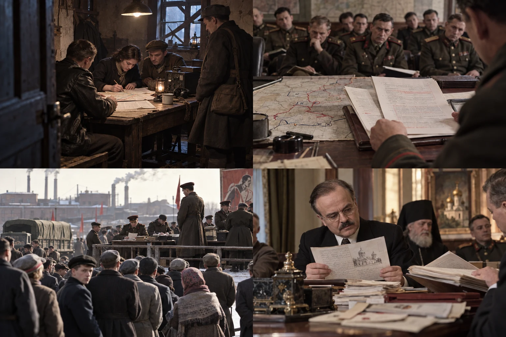
敌后联络站
agenda/partisan联络员把几张铁路时刻表摊开，在背面写上能够联系到的名字。不是每一条线路，都有人能安全返回。 电台先被关闭了几秒，屋里的人才开始说话。 {address}，新的敌后联络能破坏运输与通讯，但经费、器材和接应都必须先落实。命令传到占领区后，承担风险的是具体的人。是否建立这一批组织？
失守部队复盘会
agenda/lessons地图上保留着失守前的标记。几个经历过撤退的军官坐在后排，等着知道他们的经验会成为检讨，还是下一次部署的依据。 参谋把已经修改的命令与旧命令并排放好。 {address}，恢复指挥能力，要让懂得这次失守原因的人重新承担岗位。政治机关会对这种调整更加警惕。您是否批准本轮军官团恢复与整训？
补充兵员会议
agenda/mobilize补员统计旁边是一份工厂缺工表。两份名单里出现了相同的年龄，许多人还没有来得及知道自己将去哪一边。 参谋读到家庭赡养情况时放慢了一点。 {address}，追加征兵能够补充红军，工厂和家庭会因此少一批人。我们需要的是这一轮明确的征集范围。您是否下达命令？
宗教事务会见
agenda/religion一份申请重开教堂的信被夹在群众来信中。署名的人没有谈论纲领，只写了钟楼、门锁和几个已经很老的名字。 莫洛托夫翻到地方机关原先使用的宣传口径。 {address}，允许这一批教堂重新开放，能够缓和一部分社会关系。机关要同时调整原来的做法。您愿意批准这一轮和解，还是继续维持现行安排？
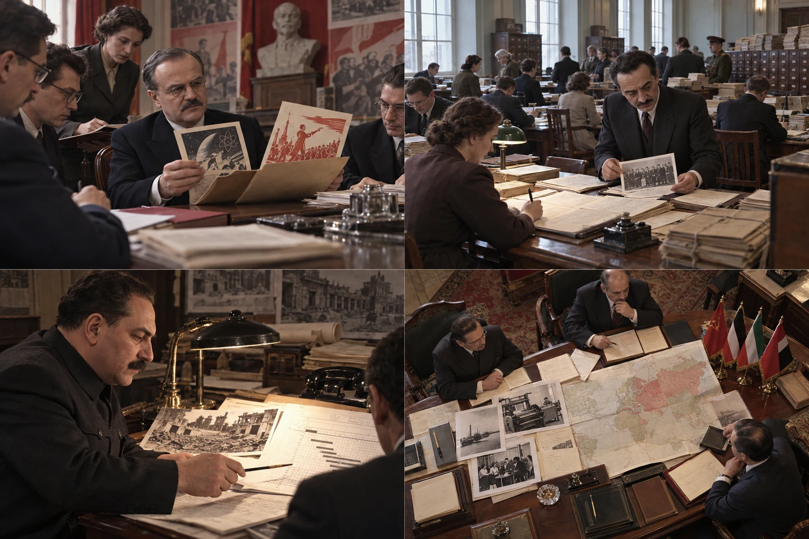
宣传部门工作会
agenda/atheist宣传人员带来新讲义，里面既有科学常识，也有准备张贴到街头的口号。两种纸张被放在同一个文件袋里。 莫洛托夫问起讲师名单，又看了看地方的反应记录。 {address}，支持世俗教育的人期待新的宣传，仍然信仰宗教的家庭会作另一种理解。要不要把这一轮工作按现有方案部署下去？
大赦名册复核室
agenda/amnesty信封里装着一张旧合影。申请人的亲属在照片背面标出姓名，又写了一遍最后一次收到来信的年份。 米高扬把照片放在名单旁，等你读完才继续。 {address}，名册已经复核。允许这些人回来，能够让社会松一口气，也会触动原有机关的判断。您是否批准这批大赦名单？
重建工程会商
agenda/rebuild照片里有尚未修复的屋顶，图纸上则是住房、医院和通往车站的路。地方希望先做所有事情，工程部门只能排出先后。 卡冈诺维奇把工期表移到台灯下，让你看清同一批材料的去向。 {address}，重建需要连续的工地和工人。批准这一期，民用生活与工业都会改善，其他部门可支配的预算就少一些。您愿意为哪一份日程签字？
国际联络会议
agenda/comintern几封来自远方的信提到印刷机、培训人员和贷款。国内采购部门的申请也在桌上，使用的是同一份预算。 外交代表把地图折到边境以外，又留下了后方城市的一角。 {address}，顾问与援助可以扩大阵营影响，国内也会追问这些资源为何没有先用于自己的生活。您是否批准这一轮对外扩展？
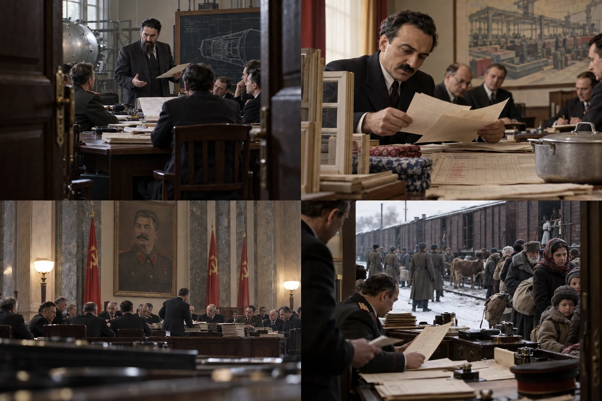
科研组保密会议
agenda/hydrogen库尔恰托夫没有带宣传材料，只带了试验记录和一张设备清单。清单末尾是需要从其他生产任务中抽出的工业能力。 他把尚未核实的推算单独放开，没有让它与已有结果混在一起。 {address}，更高阶段的研究需要真正的设备与产能。我们可以承担这一期工作，不能把尚未完成的试验写成既成事实。您是否同意继续投入？
民用生产协调会
agenda/consumer米高扬从货架调查里抽出几张纸。人们缺少的东西并不宏大：窗框、布料、锅和能够按时到货的日用品。 计划表上几条产线仍写着原来的用途，修改处都留了空。 {address}，让商店真正有东西，需要把工业能力转到民用订单上。这会占用现有产能，民心也能得到直接改善。您要不要批准这一期转换？
主席团机关会议
agenda/destalin墙上的画像没有人先动。秘书把历年的表彰、处分和宣传用语放在一处，等候新的最高层给出处理范围。 屋里的人都清楚，取下一个名字比说明过去困难得多。 {address}，机关要从您今天的态度判断，哪些做法可以改变。反个人崇拜会减轻偏执与旧有势力，但不能代替对具体责任的处理。是否开展本轮工作？
民族事务审签室
agenda/deport迁移计划先列车次，再列人数。随附的一封地方来信把顺序倒了过来：老人、孩子、家里的牲畜，以及来不及收割的地。 调查员停在执行范围一栏，等待最后的签字。 {address}，整批迁移能够满足机关眼前的控制要求，却会让民族矛盾更深。名单一旦下达，后果要由这些家庭承担。是否仍按此方案执行？
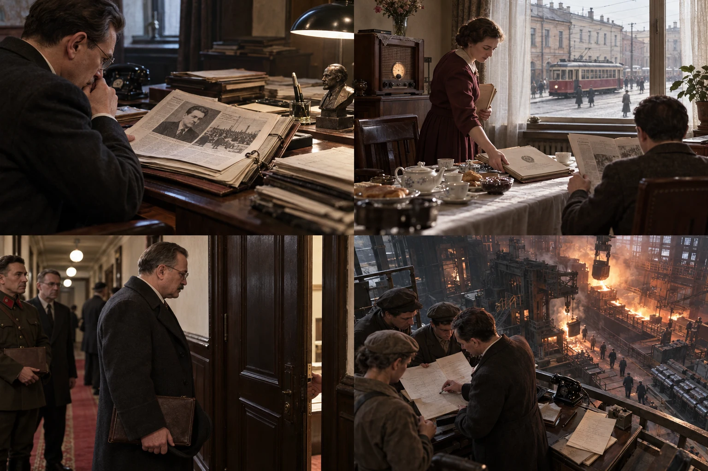
办公厅剪报夹
interlude/p0-intro/page/0基洛夫遇刺。两年前的旧报被重新放到案头，订在后面的调查通知还没有结束。
莫斯科广播
interlude/p0-intro/page/1“新的一年，工业建设将继续前进……”窗外传来电车铃。女秘书把宪法草案放在早餐旁。
办公室门外
interlude/p0-intro/page/2“莫洛托夫同志到了。”“让他进来吧。”门开了一道缝，走廊里的交谈随即停住。
钢厂来电
interlude/a1-intro/page/0新的指标已经下到车间。厂长请求补充设备，工人代表随函附上一张住房申请。
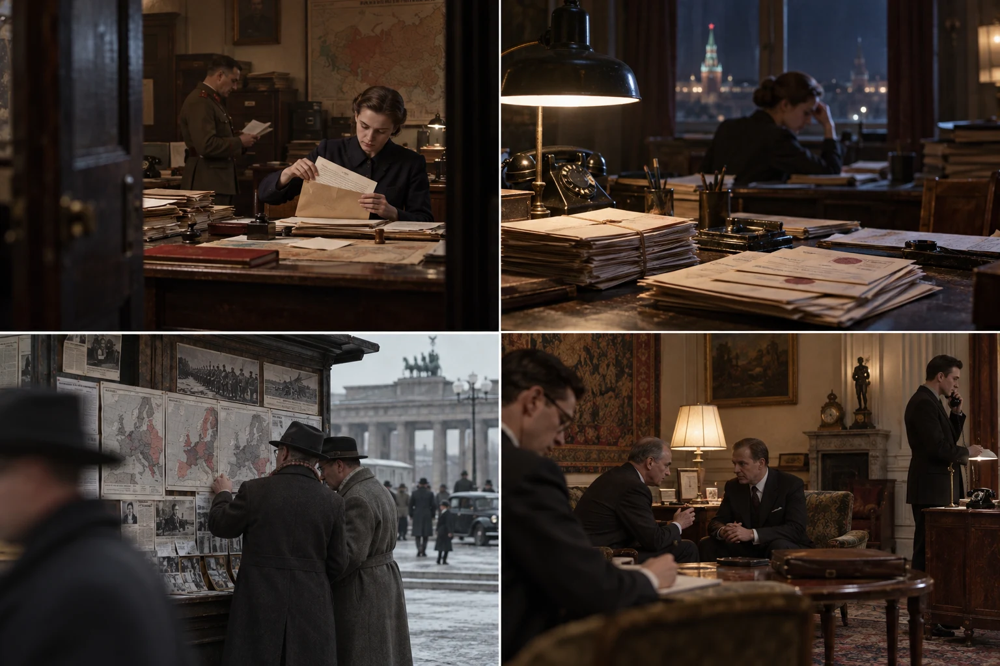
中央收到的一份材料
interlude/a1-intro/page/1德文材料被装进封套。值班秘书注明，来历仍需核验，军方应尽快派人解释。
夜间值班秘书
interlude/a1-end/page/0“任命通知已经送出。这几封信没有收到答复，要不要再放到明天的文件里？”
欧洲报刊剪页
interlude/a2-intro/page/0外交官把几张不同日期的地图摆在一起。边界的变化，比回电来得更快。
驻外代表团
interlude/a2-intro/page/1对方愿意继续接触，要求我们先把条件说明白。译员等在电话旁。
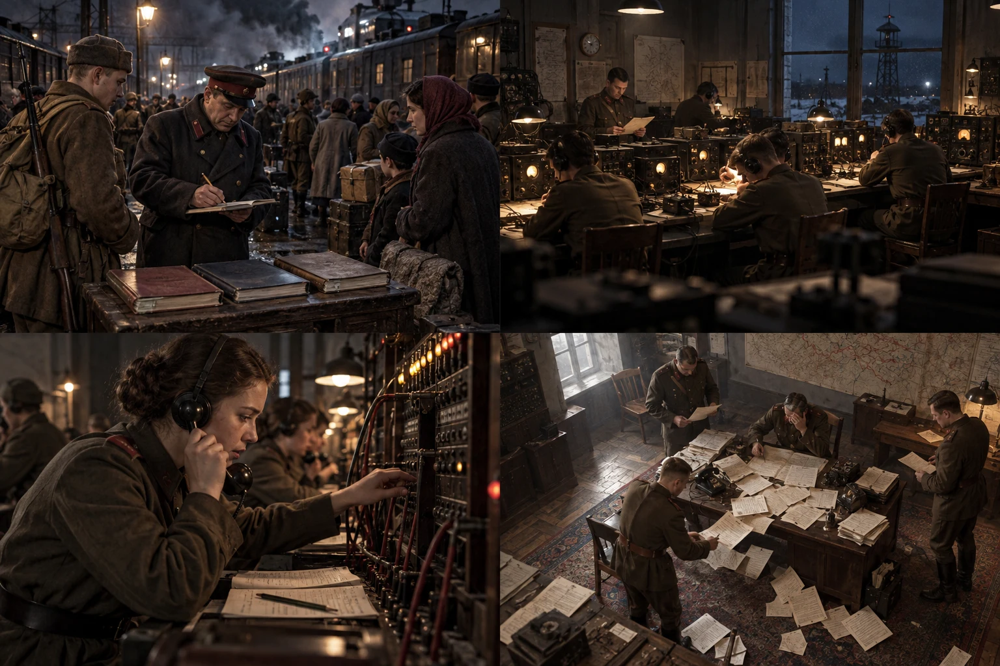
西部铁路部门
interlude/a2-end/page/0站台上的列车迟迟未发。调度员把军运、设备和普通旅客分别写进三本簿子。
监听室 · 值夜记录
interlude/a2-end/page/1几个呼号比前几晚更加频繁。值班员给报告加了“请速转阅”。
统帅部接线台
interlude/a3-intro/page/0“边境遭到攻击。部队要求命令。”接线员来不及登记完一个号码，下一盏灯就亮了。
西部军区 · 第一批报告
interlude/a3-intro/page/1有的单位请求反击，有的已经失去邻部联络。电报纸从桌边落到地上。
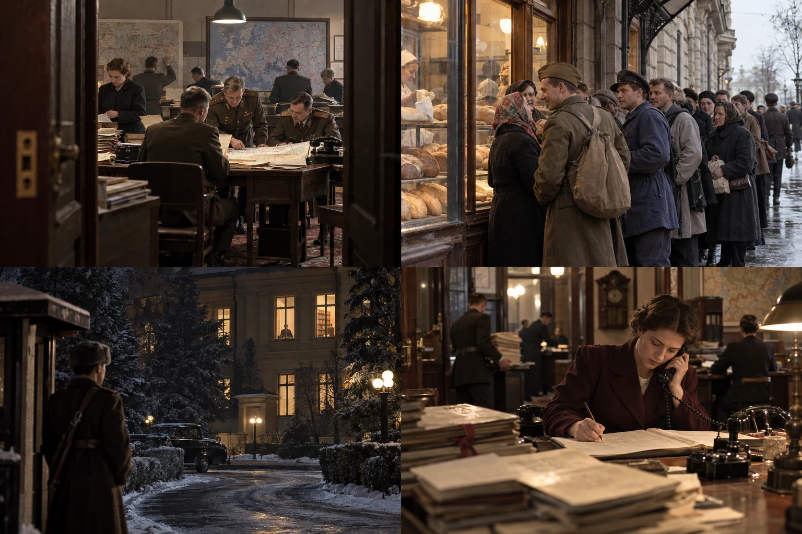
战后汇总
interlude/a4-intro/page/0{warReport}
一家面包店门前
interlude/a4-intro/page/1复员的人与厂里的工人排在一起。有人说，下一份计划应该先给每个家庭一间房。
别墅值班室
interlude/a4-end/page/0“书房还亮着？”“亮着。今晚来的人，比平常更少说话。”
一位秘书的记录
interlude/a5-intro/page/0“会见推迟。来电仍照常登记。几份文件要求尽快签字，已经放到同一个文件夹。”
孔采沃别墅 · 值班线
interlude/5-0/page/0接线员重复呼叫。没有人先说出自己的判断，大家都在等另一端开口。
莫斯科广播
interlude/5-0/page/1{deathReport}
定调抉择 · 决定此后二十年的运转方式
result/0-1/option/0名单被退回内务部，附一句话：加快。 反对派的影响力被压低，政治控制更集中。代价写在红军、工业和民心的账本上。
定调抉择 · 决定此后二十年的运转方式
result/0-1/option/1名单被分成两份，一份加批注，一份退回。 左翼被暂时吸纳，右翼受到排挤。政治资本增加，斯大林派对新的平衡并不放心。
定调抉择 · 决定此后二十年的运转方式
result/0-1/option/2名单被锁进抽屉。有人松了口气，有人记住了这件事。 偏执下降，两派获得发言空间；公开争论也让民众暂时担忧政策摇摆。后续可在决议台投入政治资本恢复党内讨论。
定调抉择 · 决定工厂往哪里长
result/0-2/option/0钢和铁。别的不谈。 工业以最快速度堆高。住房、面包、日用品继续排队。
定调抉择 · 决定工厂往哪里长
result/0-2/option/1让机器先喘一口气。 R56 意义上的社会线：大众免疫、教育倡议、工人文化。工厂增长慢了，但农村开始回信了。
定调抉择 · 决定工厂往哪里长
result/0-2/option/2把民用车间改成坦克车间。 五年后这笔钱会派上用场。代价是现在没人相信战争真的会来。
定调抉择 · 决定工厂往哪里长
result/0-2/option/3进口的机器，仿制的图纸。 工业稳步推进，没有突出成绩，也没有明显短板。
定调抉择 · 法理工具还是留白
result/0-3/option/0最高苏维埃第一次开会时，全体起立鼓掌四十分钟。 清洗从此有法理外衣。后续清洗决议的政治资本成本降低 20%，军力和民心等损失仍会发生。
定调抉择 · 法理工具还是留白
result/0-3/option/1草案被重新塞回抽屉。 机器保留了灵活性。同时也保留了一个将来能被别人翻出来的东西。
最高领导人案头 · 常设决议
phase/dec-prologue第二幕之前，这台机器还有一些可以立刻执行的动作。它们不消耗时间，只消耗资源。 政治资本和内务部的产能是有限的。用完了就没了。
核心抉择 · 全作分歧最大的一刀
result/1-1/option/0图哈切夫斯基、乌博列维奇、叶戈罗夫、布柳赫尔，在同一天被带走。 军内再没有政治威胁。纵深作战学说线随之永久关闭。 1941 年，红军要用没有大脑的躯体去挡住德军的进攻。
核心抉择 · 全作分歧最大的一刀
result/1-1/option/1文件被宣布为伪造，作者被宣布为间谍。 这条路打开纵深作战与大机械化的学说线，也让总参谋部第一次握住了实权。 代价是这个国家里多了一个有军队支持、并且知道这一点的人。
核心抉择 · 全作分歧最大的一刀
result/1-1/option/2三个人被带走，都是副职。元帅们的名字一个没动。 折中方案。既没有完整的军官团，也没有完整的控制。
核心抉择 · 工业与农村之间
result/1-2/option/0拖拉机站建起来了，交不起粮的人被划成了另一个阶级。 在这条架空路线中，追加征购进一步挤压农村生计。饥荒与逃亡的风险上升，死亡不会出现在产量表里。
核心抉择 · 工业与农村之间
result/1-2/option/1进度放慢。基层干部对此不满。 没有大规模饥荒。集体化的完成时间推后，但农村没有崩掉。
核心抉择 · 工业与农村之间
result/1-2/option/2收购指标被下调，自留地合法化。 农村支持回来了。右翼拿到了一面旗子，而偏执开始上升——因为没有交粮的人必须有人负责。
核心抉择 · 决定清洗的形态
result/1-3/option/0配额指标照旧下达到各州。 清洗效率在此后两幕维持在最高水平。内务部本身成为一台不受控制的机器。
核心抉择 · 决定清洗的形态
result/1-3/option/1叶若夫被调离内务部。他很清楚这意味着什么。 贝利亚获得初始势力 15。后续可在决议台给内务部专项授权，换取短期控制力，同时承担权力向他集中的代价。
核心抉择 · 决定清洗的形态
result/1-3/option/2叶若夫被自己建立的程序处理掉了。 内务部一时虚弱。此后清洗的规模会小一个档次。
长期投注 · 1949 年才结算
result/1-4/option/0三个新的研究所成立，代号保密。 1949 年可以完成试爆。十年的账，现在开始记。
长期投注 · 1949 年才结算
result/1-4/option/1保留一个实验室和一批理论物理学家。 进度缓慢。1953 年之前不会开花结果。
长期投注 · 1949 年才结算
result/1-4/option/2备忘录被退回，理由是纸张短缺。 省下的资源现在有用。1945 年美国人会告诉你它到底值多少。
学说抉择 · 决定 1941 年的样子
result/1-5/option/0三个坦克军、五个机械化军按新编制组建。 红军在三幕之后会拥有一套能反攻的理论。在此之前，它需要时间。
学说抉择 · 决定 1941 年的样子
result/1-5/option/1每个师部多了一张桌子，桌上坐着一个人。 党对军队的控制回到 1937 年的水平。指挥效率反而下降。
学说抉择 · 决定 1941 年的样子
result/1-5/option/2顿河和库班的骑兵师重新挂上了传统的番号。 骑兵在现代战争里价值有限，但士气是真实的。
学说抉择 · 决定 1941 年的样子
result/1-5/option/3火炮产量提高到世界第一。 突破时会有用。机动时不会有。
最高领导人案头 · 常设决议
phase/dec-act1距离下一份条约还有一年。这段时间可以用来做很多事，也可以什么都做不了。
全局最大分叉 · 决定战争时间与预警
result/2-1/option/0克里姆林宫的走廊里出现了万字旗。合影时双方都笑得很自然。 东波兰、波罗的海、比萨拉比亚进入势力范围，工业获得两年的喘息。 代价是：1941 年 6 月 22 日那天，边境上不会有任何人提前告诉你。
全局最大分叉 · 决定战争时间与预警
result/2-1/option/1军事代表团终于上岸了。谈判进行了十一天。 战争推后一年，而且这次有完整预警。 但英法拖到最后一天才签，期间什么承诺都没兑现。
全局最大分叉 · 决定战争时间与预警
result/2-1/option/2西班牙、中国、法国的支部都收到了新指示。 德国先动手打西方。你有额外的一年。 输出革命损害西方信任；战时请求租借物资的政治成本会翻倍。
全局最大分叉 · 决定战争时间与预警
result/2-1/option/3没有签字，没有合影，没有盟友。 防线值大幅提高，偏执下降——因为不再需要猜测盟友的意图。 代价是没有任何人会分担这场战争。
卡累利阿地峡
result/2-2/option/0全面入侵 —— 两周拿下赫尔辛基 卡累利阿地峡 进攻取得割地，红军暴露出组织问题 部队在雪地与筑垒地带反复推进。拿到的土地与付出的代价，被写进了同一份总结。 前沿的缺点已经被外界观察到；北线防御增强，之后的敌军判断也会因此改变。
卡累利阿地峡
result/2-2/option/1全面入侵 —— 但红军现在是缺员的 卡累利阿地峡 割地拿到了，缺员部队承受更高损耗 前线用更长的时间完成撤收与统计。部队缺员的问题没有被结果掩盖，军方需要同时面对补员与信任。 北线获得缓冲，但军心与国际军事判断付出了更高代价。
卡累利阿地峡—列宁格勒北侧
result/2-2/option/2有限目标 —— 只要卡累利阿地峡 卡累利阿地峡—列宁格勒北侧 谈判换来有限缓冲，北线避免全面战争 条件在谈判桌上被缩小，边防与运输随协议调整。前沿收到的是新的哨位安排，没有大规模攻城命令。 工业投入用于交换和边防调整，芬兰保持中立安排，后续北线压力因此有所不同。
图片尚未生成；图像服务额度恢复后继续制作。
汉科半岛—芬兰湾
result/2-2/option/3外交解决 —— 用汉科半岛换 汉科半岛—芬兰湾 交换协议落笔，列宁格勒仍缺少纵深 签署的文件交给了边防与港口机关。没有全面战争，也没有足以解除列宁格勒近郊风险的缓冲区。 国际影响有所增加，但列宁格勒方向的风险被保留下来。
图片尚未生成；图像服务额度恢复后继续制作。
芬兰南部—卡累利阿地峡
result/2-2/option/4全面吞并 —— 走波罗的海那套流程 芬兰南部—卡累利阿地峡 吞并完成，新的抵抗与民族问题随之出现 行政与军事机关开始接管当地事务。表面上的北线解决，并没有消除居民的不满与抵抗。 工业与势力范围扩大，国际影响、民心和民族关系同时承担代价。
图片尚未生成；图像服务额度恢复后继续制作。
缓冲区问题
result/2-3/option/0三个外交部长在莫斯科签了字。签字时窗外停着红军。 缓冲区到手，防线前推四百公里。 代价是这片新领土上的人不认为自己是苏联人——这件事在 1941 年会以另一种形式爆发。
图片尚未生成；图像服务额度恢复后继续制作。
缓冲区问题
result/2-3/option/1先是贸易协定，然后是互助条约，然后才是驻军。 慢，但每一层都有法律形式。当地的抵抗会弱一个档次。
图片尚未生成；图像服务额度恢复后继续制作。
缓冲区问题
result/2-3/option/2边界线没有变。波罗的海三国的首都在观望。 防线短了四百公里，也缺了一块缓冲。1941 年德军会从这里直接开进列宁格勒方向。
图片尚未生成；图像服务额度恢复后继续制作。
三年时间，还来得及改多少
result/2-4/option/0几千名军官从科雷马回来，军衔恢复，职务待定。 指挥层补上了。偏执因此上升——放回来的人记得是谁把他们送走的。
图片尚未生成；图像服务额度恢复后继续制作。
三年时间，还来得及改多少
result/2-4/option/1政治委员的签字重新成为作战命令生效的必要条件。 军队在政治上完全可靠。在军事上，命令会慢一步。
图片尚未生成；图像服务额度恢复后继续制作。
三年时间，还来得及改多少
result/2-4/option/2相关条例已经起草完成，等战争爆发后生效。 第三幕所有死守类选项的判定效果提高四分之一。 代价是这些人不会被计入战斗损失之外的任何统计。
图片尚未生成；图像服务额度恢复后继续制作。
最高领导人案头 · 常设决议
phase/2-5最后一份战前预算送到桌上。工厂数量是固定的，防线长度不是。 新边界上的工事是一笔冒险的赌注：如果 1941 年 6 月之前没修满，它就一点用都没有。 斯大林防线是旧的、结实的、位置靠后的。莫洛托夫防线是新的、脆弱的、位置靠前的。
图片尚未生成；图像服务额度恢复后继续制作。
最高领导人案头 · 常设决议
phase/dec-mid3边境线已经丢了。现在能做的只有两件事：把工厂拆下来往东送，把人重新填进部队。 每一条决议都要从别的方向挪资源。
图片尚未生成；图像服务额度恢复后继续制作。
最高领导人案头 · 常设决议
phase/dec-mid3b库尔斯克之后，战线第一次不再后移。这段时间可以用来补充建制，也可以用来清账。
图片尚未生成；图像服务额度恢复后继续制作。
布列斯特以东 · 撤收通道
result/3-1/option/0/tier/0死守 —— 一步也不许后退 纵队散了，先找到还在呼叫的电台 几个团的呼号先后从电波里消失。参谋把还能联系上的部队圈在纸上，已经不能拼成原来的战线。 公路上，拆下来的机床与步兵挤在一起。站长没有再问发车时刻，只问下一座桥还能不能过。
图片尚未生成；图像服务额度恢复后继续制作。
西部边境 · 第二道集结线
result/3-1/option/0/tier/1死守 —— 一步也不许后退 前沿失守，部队退向新的联络点 敌军越过了本次接触线。撤出的部队仍保有部分指挥关系，军官沿着路口重新收拢队伍。 一个车夫把家人的包裹让给了伤员。他不知道原来的村子还在谁手里，只记得下一站的名字。
图片尚未生成；图像服务额度恢复后继续制作。
西部边境 · 河岸接触线
result/3-1/option/0/tier/2死守 —— 一步也不许后退 两岸还在交火，没有一份突破报告 桥头的枪声时断时续。谁也没有足够的兵力把对岸的火力彻底压下去，阵地在反复试探中停住了。 炊事车躲在林子里。伙夫把饭分成两批，说第二批要等夜里才能送到前沿。
图片尚未生成；图像服务额度恢复后继续制作。
西部边境 · 防御桥区
result/3-1/option/0/tier/3死守 —— 一步也不许后退 桥区守住了，后方获得了喘息 前沿阵地仍与指挥所保持联系。桥上的障碍没有被突破，工兵趁炮击间隙继续加固桥头。 村民把井水送到掩体旁。没有人庆祝，大家都在听下一轮炮声会从哪边传来。
图片尚未生成；图像服务额度恢复后继续制作。
格罗德诺—布列斯特 · 局部反击区
result/3-1/option/0/tier/4死守 —— 一步也不许后退 局部反击推进，战线尚未结束 突击分队从接触线上向前推了一段，迫使面前的敌军重新部署。电报用的是“局部反攻”，没有写全线胜利。 跟进的修理班先到了河边。他们要把桥修通，才有把今天的推进留到明天的可能。
布列斯特以东 · 撤收通道
result/3-1/option/1/tier/0弹性防御 —— 用空间换建制 纵队散了，先找到还在呼叫的电台 几个团的呼号先后从电波里消失。参谋把还能联系上的部队圈在纸上，已经不能拼成原来的战线。 公路上，拆下来的机床与步兵挤在一起。站长没有再问发车时刻，只问下一座桥还能不能过。
西部边境 · 第二道集结线
result/3-1/option/1/tier/1弹性防御 —— 用空间换建制 前沿失守，部队退向新的联络点 敌军越过了本次接触线。撤出的部队仍保有部分指挥关系，军官沿着路口重新收拢队伍。 一个车夫把家人的包裹让给了伤员。他不知道原来的村子还在谁手里，只记得下一站的名字。
西部边境 · 河岸接触线
result/3-1/option/1/tier/2弹性防御 —— 用空间换建制 两岸还在交火，没有一份突破报告 桥头的枪声时断时续。谁也没有足够的兵力把对岸的火力彻底压下去，阵地在反复试探中停住了。 炊事车躲在林子里。伙夫把饭分成两批，说第二批要等夜里才能送到前沿。
西部边境 · 防御桥区
result/3-1/option/1/tier/3弹性防御 —— 用空间换建制 桥区守住了，后方获得了喘息 前沿阵地仍与指挥所保持联系。桥上的障碍没有被突破，工兵趁炮击间隙继续加固桥头。 村民把井水送到掩体旁。没有人庆祝，大家都在听下一轮炮声会从哪边传来。
格罗德诺—布列斯特 · 局部反击区
result/3-1/option/1/tier/4弹性防御 —— 用空间换建制 局部反击推进，战线尚未结束 突击分队从接触线上向前推了一段，迫使面前的敌军重新部署。电报用的是“局部反攻”，没有写全线胜利。 跟进的修理班先到了河边。他们要把桥修通，才有把今天的推进留到明天的可能。
布列斯特以东 · 撤收通道
result/3-1/option/2/tier/0全线反击 —— 把敌人赶回去 纵队散了，先找到还在呼叫的电台 几个团的呼号先后从电波里消失。参谋把还能联系上的部队圈在纸上，已经不能拼成原来的战线。 公路上，拆下来的机床与步兵挤在一起。站长没有再问发车时刻，只问下一座桥还能不能过。
西部边境 · 第二道集结线
result/3-1/option/2/tier/1全线反击 —— 把敌人赶回去 前沿失守，部队退向新的联络点 敌军越过了本次接触线。撤出的部队仍保有部分指挥关系，军官沿着路口重新收拢队伍。 一个车夫把家人的包裹让给了伤员。他不知道原来的村子还在谁手里，只记得下一站的名字。
西部边境 · 河岸接触线
result/3-1/option/2/tier/2全线反击 —— 把敌人赶回去 两岸还在交火，没有一份突破报告 桥头的枪声时断时续。谁也没有足够的兵力把对岸的火力彻底压下去，阵地在反复试探中停住了。 炊事车躲在林子里。伙夫把饭分成两批，说第二批要等夜里才能送到前沿。
西部边境 · 防御桥区
result/3-1/option/2/tier/3全线反击 —— 把敌人赶回去 桥区守住了，后方获得了喘息 前沿阵地仍与指挥所保持联系。桥上的障碍没有被突破，工兵趁炮击间隙继续加固桥头。 村民把井水送到掩体旁。没有人庆祝，大家都在听下一轮炮声会从哪边传来。
格罗德诺—布列斯特 · 局部反击区
result/3-1/option/2/tier/4全线反击 —— 把敌人赶回去 局部反击推进，战线尚未结束 突击分队从接触线上向前推了一段，迫使面前的敌军重新部署。电报用的是“局部反攻”，没有写全线胜利。 跟进的修理班先到了河边。他们要把桥修通，才有把今天的推进留到明天的可能。
布列斯特以东 · 撤收通道
result/3-1/option/3/tier/0焦土 —— 搬走能搬的，烧掉剩下的 纵队散了，先找到还在呼叫的电台 几个团的呼号先后从电波里消失。参谋把还能联系上的部队圈在纸上，已经不能拼成原来的战线。 公路上，拆下来的机床与步兵挤在一起。站长没有再问发车时刻，只问下一座桥还能不能过。
西部边境 · 第二道集结线
result/3-1/option/3/tier/1焦土 —— 搬走能搬的，烧掉剩下的 前沿失守，部队退向新的联络点 敌军越过了本次接触线。撤出的部队仍保有部分指挥关系，军官沿着路口重新收拢队伍。 一个车夫把家人的包裹让给了伤员。他不知道原来的村子还在谁手里，只记得下一站的名字。
西部边境 · 河岸接触线
result/3-1/option/3/tier/2焦土 —— 搬走能搬的，烧掉剩下的 两岸还在交火，没有一份突破报告 桥头的枪声时断时续。谁也没有足够的兵力把对岸的火力彻底压下去，阵地在反复试探中停住了。 炊事车躲在林子里。伙夫把饭分成两批，说第二批要等夜里才能送到前沿。
西部边境 · 防御桥区
result/3-1/option/3/tier/3焦土 —— 搬走能搬的，烧掉剩下的 桥区守住了，后方获得了喘息 前沿阵地仍与指挥所保持联系。桥上的障碍没有被突破，工兵趁炮击间隙继续加固桥头。 村民把井水送到掩体旁。没有人庆祝，大家都在听下一轮炮声会从哪边传来。
格罗德诺—布列斯特 · 局部反击区
result/3-1/option/3/tier/4焦土 —— 搬走能搬的，烧掉剩下的 局部反击推进，战线尚未结束 突击分队从接触线上向前推了一段，迫使面前的敌军重新部署。电报用的是“局部反攻”，没有写全线胜利。 跟进的修理班先到了河边。他们要把桥修通，才有把今天的推进留到明天的可能。
拉多加湖—列宁格勒
result/3-2/option/0拉多加湖「生命之路」 拉多加湖—列宁格勒 湖上运输接通，城市获得新的粮食线 运输队在炮火与冰面风险之间往返。指挥部没有把路线画得更粗，只在旁边补上下一批车辆的时间。 组织运输消耗工业能力和部分军力，民心因生存希望而回升。
列宁格勒城区工厂
result/3-2/option/1与工业共存亡 —— 不疏散 列宁格勒城区工厂 工厂继续生产，居民承受围城代价 车间与宿舍之间的距离越来越短。有人上完一班工，便在机器旁坐下，等下一次警报过去。 工业没有因疏散而直接扣减，民心承担损失；对外宣传的影响同时增加。
列宁格勒—拉多加湖东岸
result/3-2/option/2优先疏散平民 列宁格勒—拉多加湖东岸 疏散队伍离开城市，车间也开始变空 运输名单首先安排居民离城。前沿继续守备，后方则要为抵达的人寻找住处与工作。 工业为疏散付出成本，民心得到改善。
列宁格勒东向撤收线
result/3-2/option/3放弃城市 列宁格勒东向撤收线 撤退命令执行，城市被放弃 工厂设备与不能带走的设施分别处理，部队向东转移。民众看见的是离城方向上的车队。 军队保存部分组织力量，民心因城市失去而重挫。
莫斯科能等到援军吗
result/3-3a/option/0条约在莫斯科签署。西伯利亚师开始通过西伯利亚大铁路西调。 三十个师在莫斯科城下出现的时候，德军参谋部以为是新组建的部队。
莫斯科能等到援军吗
result/3-3a/option/1远东保持戒备，但抽出三分之二的兵力西调。 同样的援军，方式不同。这份信任日后会变成一份档案，被反复引用。
莫斯科西向防区 · 后方联络线
result/3-3b/option/0/tier/0留在莫斯科，红场阅兵 西向防区失去建制，指挥所收拢残部 前沿电台陆续沉默。部队正向城东联络点报到，原定协同已经无法维持；城内局势仍要等待后续报告。 一列装满文件箱的车停在雪里。随车人员先把煤留给了拖着空车皮回来的机车。
莫斯科西郊 · 纵深阵地
result/3-3b/option/0/tier/1留在莫斯科，红场阅兵 前沿阵地失守，防御转入纵深 接触线被突破，守军撤向下一道阵地。还能通话的指挥员正在核对人员、炮位和通往城区的道路。 近郊居民把窗框拆下来堵住掩体口。家门上的门牌还挂着，屋里已经没有炉火。
莫扎伊斯克—沃洛科拉姆斯克
result/3-3b/option/0/tier/2留在莫斯科，红场阅兵 雪线僵持，双方都在等待下一批补给 火炮隔着雪野试射，侦察队回来时仍带着相同的结论：眼前的敌人没有退，也没有继续推进。 铁路工人在冻住的道岔旁轮班生火。列车能多开一趟，前沿就能多等一个晚上。
莫斯科西向防区 · 雪地阵地
result/3-3b/option/0/tier/3留在莫斯科，红场阅兵 首都方向的接触线守住了 来自几处阵地的电话仍能接通。进攻被挡在本次防区外，守军开始补充弹药、修复被炸断的道路。 防空警报停下来后，一位售货员重新把店门支起了一半。他没有把防空包从肩上放下。
莫斯科西郊 · 冬季反击轴线
result/3-3b/option/0/tier/4留在莫斯科，红场阅兵 雪地里的反击开始向前延伸 前沿报告敌军退出了几个接触阵地。步兵沿着压出的车辙跟上，新的目标仍在射程与补给能力之内。 修理工用炉火烤开冻住的零件。前面的坦克每多走一段，后方就得把同样长的路再走一遍。
莫斯科西向防区 · 后方联络线
result/3-3b/option/1/tier/0撤往古比雪夫 西向防区失去建制，指挥所收拢残部 前沿电台陆续沉默。部队正向城东联络点报到，原定协同已经无法维持；城内局势仍要等待后续报告。 一列装满文件箱的车停在雪里。随车人员先把煤留给了拖着空车皮回来的机车。
莫斯科西郊 · 纵深阵地
result/3-3b/option/1/tier/1撤往古比雪夫 前沿阵地失守，防御转入纵深 接触线被突破，守军撤向下一道阵地。还能通话的指挥员正在核对人员、炮位和通往城区的道路。 近郊居民把窗框拆下来堵住掩体口。家门上的门牌还挂着，屋里已经没有炉火。
莫扎伊斯克—沃洛科拉姆斯克
result/3-3b/option/1/tier/2撤往古比雪夫 雪线僵持，双方都在等待下一批补给 火炮隔着雪野试射，侦察队回来时仍带着相同的结论：眼前的敌人没有退，也没有继续推进。 铁路工人在冻住的道岔旁轮班生火。列车能多开一趟，前沿就能多等一个晚上。
莫斯科西向防区 · 雪地阵地
result/3-3b/option/1/tier/3撤往古比雪夫 首都方向的接触线守住了 来自几处阵地的电话仍能接通。进攻被挡在本次防区外，守军开始补充弹药、修复被炸断的道路。 防空警报停下来后，一位售货员重新把店门支起了一半。他没有把防空包从肩上放下。
莫斯科西郊 · 冬季反击轴线
result/3-3b/option/1/tier/4撤往古比雪夫 雪地里的反击开始向前延伸 前沿报告敌军退出了几个接触阵地。步兵沿着压出的车辙跟上，新的目标仍在射程与补给能力之内。 修理工用炉火烤开冻住的零件。前面的坦克每多走一段，后方就得把同样长的路再走一遍。
莫斯科西向防区 · 后方联络线
result/3-3b/option/2/tier/0交给朱可夫全权指挥 西向防区失去建制，指挥所收拢残部 前沿电台陆续沉默。部队正向城东联络点报到，原定协同已经无法维持；城内局势仍要等待后续报告。 一列装满文件箱的车停在雪里。随车人员先把煤留给了拖着空车皮回来的机车。
莫斯科西郊 · 纵深阵地
result/3-3b/option/2/tier/1交给朱可夫全权指挥 前沿阵地失守，防御转入纵深 接触线被突破，守军撤向下一道阵地。还能通话的指挥员正在核对人员、炮位和通往城区的道路。 近郊居民把窗框拆下来堵住掩体口。家门上的门牌还挂着，屋里已经没有炉火。
莫扎伊斯克—沃洛科拉姆斯克
result/3-3b/option/2/tier/2交给朱可夫全权指挥 雪线僵持，双方都在等待下一批补给 火炮隔着雪野试射，侦察队回来时仍带着相同的结论：眼前的敌人没有退，也没有继续推进。 铁路工人在冻住的道岔旁轮班生火。列车能多开一趟，前沿就能多等一个晚上。
莫斯科西向防区 · 雪地阵地
result/3-3b/option/2/tier/3交给朱可夫全权指挥 首都方向的接触线守住了 来自几处阵地的电话仍能接通。进攻被挡在本次防区外，守军开始补充弹药、修复被炸断的道路。 防空警报停下来后，一位售货员重新把店门支起了一半。他没有把防空包从肩上放下。
莫斯科西郊 · 冬季反击轴线
result/3-3b/option/2/tier/4交给朱可夫全权指挥 雪地里的反击开始向前延伸 前沿报告敌军退出了几个接触阵地。步兵沿着压出的车辙跟上，新的目标仍在射程与补给能力之内。 修理工用炉火烤开冻住的零件。前面的坦克每多走一段，后方就得把同样长的路再走一遍。
1941 – 1942
result/3-5/option/0第一批车队从波斯湾上岸，然后穿过伊朗开进高加索。 卡车和铝改变了红军的机动能力。代价是这台机器第一次公开接受了资本主义的施舍。
1941 – 1942
result/3-5/option/1答复是一句话：苏联有能力自己打赢这场战争。 这句话在宣传上很有用。在后勤上，它意味着此后每一辆卡车都要自己造。
1941 – 1942
result/3-5/option/2协议采用现金结算，不附带战后条款。 拿到的物资少了一半，但战后的账本干净。这笔账在 1945 年之后会体现出价值。
伏尔加河东岸 · 撤收渡口
result/3-6/option/0/tier/0巷战死守，同时准备两翼合围 西岸联络断裂，渡口接回分散部队 几处厂房阵地失去了统一指挥。船只在炮火间隙接回还能抵达岸边的人，部队正在东岸重新登记。 摆渡人把最后一捆木柴塞进船舱。他说今夜还要回来，岸边还有人在等。
斯大林格勒西岸 · 厂区外缘
result/3-6/option/0/tier/1巷战死守，同时准备两翼合围 厂区阵地失守，接触线退向河岸 敌军逼近了原先的火力支点，守军转移到仍能相互支援的街区。工厂的名字开始代替部队番号出现在电报里。 一位女工把车间钥匙交给了军官。她不知道还能不能回去，只请他别把里面的名册扔掉。
厂房—河岸 · 反复争夺地带
result/3-6/option/0/tier/2巷战死守，同时准备两翼合围 楼层还在易手，整条街没有安静下来 同一栋楼的楼上与楼下传来不同方向的枪声。双方都在补人，战报上还写不出一个完整的街区归属。 送水的人沿着墙根移动。桶里的水还没有送到一半，口令已经换了两次。
伏尔加河西岸 · 防御支点
result/3-6/option/0/tier/3巷战死守，同时准备两翼合围 西岸支点还在，渡口没有断 厂房里的守军仍与河岸保持联系。阵地守住了，但每一次运输都要等炮火留下的短暂空隙。 夜里，岸边的灯只亮一下就灭。船工靠这一点光辨认还有人等着的码头。
顿河—伏尔加河 · 局部合围方向
result/3-6/option/0/tier/4巷战死守，同时准备两翼合围 两翼反击取得推进，补给决定下一步 突击部队从城区之外压向敌军侧翼，几处道路节点已经接通。参谋仍在核对两路部队的位置，没有提前宣布合围完成。 电台员把一张写满地名的纸折成四折。他要等两边都报出同一个路口，才敢把那条线画实。
伏尔加河东岸 · 撤收渡口
result/3-6/option/1/tier/0撤出城区，保存兵力 西岸联络断裂，渡口接回分散部队 几处厂房阵地失去了统一指挥。船只在炮火间隙接回还能抵达岸边的人，部队正在东岸重新登记。 摆渡人把最后一捆木柴塞进船舱。他说今夜还要回来，岸边还有人在等。
斯大林格勒西岸 · 厂区外缘
result/3-6/option/1/tier/1待修正：厂区失守结果中，背景苏军背影朝带德军十字的坦克跑，撤收方向含混。保留前景女工交钥匙，仅将背景苏军改为向右前方或观众方向撤收，敌军坦克留在远后景；额度恢复后用ImageGen只修正此格。
撤出城区，保存兵力 厂区阵地失守，接触线退向河岸 敌军逼近了原先的火力支点，守军转移到仍能相互支援的街区。工厂的名字开始代替部队番号出现在电报里。 一位女工把车间钥匙交给了军官。她不知道还能不能回去，只请他别把里面的名册扔掉。
厂房—河岸 · 反复争夺地带
result/3-6/option/1/tier/2撤出城区，保存兵力 楼层还在易手，整条街没有安静下来 同一栋楼的楼上与楼下传来不同方向的枪声。双方都在补人，战报上还写不出一个完整的街区归属。 送水的人沿着墙根移动。桶里的水还没有送到一半，口令已经换了两次。
伏尔加河西岸 · 防御支点
result/3-6/option/1/tier/3撤出城区，保存兵力 西岸支点还在，渡口没有断 厂房里的守军仍与河岸保持联系。阵地守住了，但每一次运输都要等炮火留下的短暂空隙。 夜里，岸边的灯只亮一下就灭。船工靠这一点光辨认还有人等着的码头。
顿河—伏尔加河 · 局部合围方向
result/3-6/option/1/tier/4撤出城区，保存兵力 两翼反击取得推进，补给决定下一步 突击部队从城区之外压向敌军侧翼，几处道路节点已经接通。参谋仍在核对两路部队的位置，没有提前宣布合围完成。 电台员把一张写满地名的纸折成四折。他要等两边都报出同一个路口，才敢把那条线画实。
伏尔加河东岸 · 撤收渡口
result/3-6/option/2/tier/0正面强攻 —— 不计代价夺回城区 西岸联络断裂，渡口接回分散部队 几处厂房阵地失去了统一指挥。船只在炮火间隙接回还能抵达岸边的人，部队正在东岸重新登记。 摆渡人把最后一捆木柴塞进船舱。他说今夜还要回来，岸边还有人在等。
斯大林格勒西岸 · 厂区外缘
result/3-6/option/2/tier/1待修正：近景门柱形成疑似拼接，需要仅重新生成左下格为明确连续镜头；其他三格保留。修正被图像服务429额度限制阻塞。
正面强攻 —— 不计代价夺回城区 厂区阵地失守，接触线退向河岸 敌军逼近了原先的火力支点，守军转移到仍能相互支援的街区。工厂的名字开始代替部队番号出现在电报里。 一位女工把车间钥匙交给了军官。她不知道还能不能回去，只请他别把里面的名册扔掉。
厂房—河岸 · 反复争夺地带
result/3-6/option/2/tier/2正面强攻 —— 不计代价夺回城区 楼层还在易手，整条街没有安静下来 同一栋楼的楼上与楼下传来不同方向的枪声。双方都在补人，战报上还写不出一个完整的街区归属。 送水的人沿着墙根移动。桶里的水还没有送到一半，口令已经换了两次。
伏尔加河西岸 · 防御支点
result/3-6/option/2/tier/3正面强攻 —— 不计代价夺回城区 西岸支点还在，渡口没有断 厂房里的守军仍与河岸保持联系。阵地守住了，但每一次运输都要等炮火留下的短暂空隙。 夜里，岸边的灯只亮一下就灭。船工靠这一点光辨认还有人等着的码头。
顿河—伏尔加河 · 局部合围方向
result/3-6/option/2/tier/4正面强攻 —— 不计代价夺回城区 两翼反击取得推进，补给决定下一步 突击部队从城区之外压向敌军侧翼，几处道路节点已经接通。参谋仍在核对两路部队的位置，没有提前宣布合围完成。 电台员把一张写满地名的纸折成四折。他要等两边都报出同一个路口，才敢把那条线画实。
库尔斯克以东 · 后撤集结区
result/3-7/option/0/tier/0相信情报 —— 先挖八道反坦克壕 防御建制崩溃，先把分散部队找回来 突破口扩大得比报告传得更快。前沿指挥所带着电台转移，原来的装甲与步兵协同已经中断。 拖车沿着麦田边慢慢走。修理兵在能带走的零件上打记号，不再询问原来那辆车去了哪里。
突出部外缘 · 第二线阵地
result/3-7/option/0/tier/1相信情报 —— 先挖八道反坦克壕 前沿失守，纵深阵地接住撤下来的部队 敌军通过了本次接触地带。守军撤向后方反坦克阵地，仍保有的火炮正在重新划分射界。 弹药车绕开了被炸断的路。司机把地图贴在方向盘旁，手指一直按着下一个补给点。
库尔斯克突出部 · 接触地带
result/3-7/option/0/tier/2相信情报 —— 先挖八道反坦克壕 装甲集群停在彼此的火力范围内 烟尘落下来之后，几处高地仍没有改变归属。侦察队一再确认对方的集结，双方都没有打出决定性的缺口。 麦田已经压成了车辙。附近农民把剩下的一小块地围起来，给来年留了点种子。
库尔斯克突出部 · 纵深防区
result/3-7/option/0/tier/3相信情报 —— 先挖八道反坦克壕 防线顶住了冲击，部队准备轮换 反坦克阵地保持了连贯，进攻没有突破本次防区。守军开始清点弹药，工兵补上被炸开的障碍。 壕沟里有人终于把靴子脱下来晾了片刻。下一班哨兵走来时，他又把脚伸回湿透的皮革里。
库尔斯克南翼 · 反击轴线
result/3-7/option/0/tier/4相信情报 —— 先挖八道反坦克壕 局部反击越过接触线，后勤紧跟上来 装甲部队从守备地带转入推进，眼前几处火力点被迫后撤。电报同时要求燃油车前移，不把冲出去的距离当作已经稳固的战果。 修理班跟在最后一辆坦克后面。有人把刚煮开的茶倒进壶里，说这一回也许能赶上他们。
库尔斯克以东 · 后撤集结区
result/3-7/option/1/tier/0抢先反攻 —— 在敌人准备好之前 防御建制崩溃，先把分散部队找回来 突破口扩大得比报告传得更快。前沿指挥所带着电台转移，原来的装甲与步兵协同已经中断。 拖车沿着麦田边慢慢走。修理兵在能带走的零件上打记号，不再询问原来那辆车去了哪里。
突出部外缘 · 第二线阵地
result/3-7/option/1/tier/1抢先反攻 —— 在敌人准备好之前 前沿失守，纵深阵地接住撤下来的部队 敌军通过了本次接触地带。守军撤向后方反坦克阵地，仍保有的火炮正在重新划分射界。 弹药车绕开了被炸断的路。司机把地图贴在方向盘旁，手指一直按着下一个补给点。
库尔斯克突出部 · 接触地带
result/3-7/option/1/tier/2抢先反攻 —— 在敌人准备好之前 装甲集群停在彼此的火力范围内 烟尘落下来之后，几处高地仍没有改变归属。侦察队一再确认对方的集结，双方都没有打出决定性的缺口。 麦田已经压成了车辙。附近农民把剩下的一小块地围起来，给来年留了点种子。
库尔斯克突出部 · 纵深防区
result/3-7/option/1/tier/3抢先反攻 —— 在敌人准备好之前 防线顶住了冲击，部队准备轮换 反坦克阵地保持了连贯，进攻没有突破本次防区。守军开始清点弹药，工兵补上被炸开的障碍。 壕沟里有人终于把靴子脱下来晾了片刻。下一班哨兵走来时，他又把脚伸回湿透的皮革里。
库尔斯克南翼 · 反击轴线
result/3-7/option/1/tier/4抢先反攻 —— 在敌人准备好之前 局部反击越过接触线，后勤紧跟上来 装甲部队从守备地带转入推进，眼前几处火力点被迫后撤。电报同时要求燃油车前移，不把冲出去的距离当作已经稳固的战果。 修理班跟在最后一辆坦克后面。有人把刚煮开的茶倒进壶里，说这一回也许能赶上他们。
库尔斯克以东 · 后撤集结区
result/3-7/option/2/tier/0后撤诱敌，拉长德军补给线 防御建制崩溃，先把分散部队找回来 突破口扩大得比报告传得更快。前沿指挥所带着电台转移，原来的装甲与步兵协同已经中断。 拖车沿着麦田边慢慢走。修理兵在能带走的零件上打记号，不再询问原来那辆车去了哪里。
突出部外缘 · 第二线阵地
result/3-7/option/2/tier/1后撤诱敌，拉长德军补给线 前沿失守，纵深阵地接住撤下来的部队 敌军通过了本次接触地带。守军撤向后方反坦克阵地，仍保有的火炮正在重新划分射界。 弹药车绕开了被炸断的路。司机把地图贴在方向盘旁，手指一直按着下一个补给点。
库尔斯克突出部 · 接触地带
result/3-7/option/2/tier/2后撤诱敌，拉长德军补给线 装甲集群停在彼此的火力范围内 烟尘落下来之后，几处高地仍没有改变归属。侦察队一再确认对方的集结，双方都没有打出决定性的缺口。 麦田已经压成了车辙。附近农民把剩下的一小块地围起来，给来年留了点种子。
库尔斯克突出部 · 纵深防区
result/3-7/option/2/tier/3后撤诱敌，拉长德军补给线 防线顶住了冲击，部队准备轮换 反坦克阵地保持了连贯，进攻没有突破本次防区。守军开始清点弹药，工兵补上被炸开的障碍。 壕沟里有人终于把靴子脱下来晾了片刻。下一班哨兵走来时，他又把脚伸回湿透的皮革里。
库尔斯克南翼 · 反击轴线
result/3-7/option/2/tier/4后撤诱敌，拉长德军补给线 局部反击越过接触线，后勤紧跟上来 装甲部队从守备地带转入推进，眼前几处火力点被迫后撤。电报同时要求燃油车前移，不把冲出去的距离当作已经稳固的战果。 修理班跟在最后一辆坦克后面。有人把刚煮开的茶倒进壶里，说这一回也许能赶上他们。
1943 – 1944
result/3-9/option/0每次会谈都提出同一份备忘录。 丘吉尔承诺在 1944 年开辟第二战场，并且兑现了。
1943 – 1944
result/3-9/option/1一份未经确认的私下备忘录被送到了伦敦和华盛顿。 西线的压力提前到来。西方对莫斯科的信任则永久性地少了一格。
1943 – 1944
result/3-9/option/2意大利和法国的支部收到了新指示，内容包括罢工的时间表。 德军的后方开始不稳定。这件事在战后会被西方反复拿出来讲。
图片尚未生成；图像服务额度恢复后继续制作。
别列津纳河以东 · 撤收线
result/3-10/option/0/tier/0主攻中央集团军群 协同失去联系，河东重新集结 几路纵队在泥泞道路上失去了配合，前进梯队与后方分离。指挥所正在河东清点还能联系上的单位。 工兵把没有用完的桥材重新捆好。河边的人开始朝来时的方向走，没有谁把地图收起来。
图片尚未生成；图像服务额度恢复后继续制作。
别列津纳河 · 前沿渡河区
result/3-10/option/0/tier/1主攻中央集团军群 渡河阵地失守，进攻暂时退回 敌军的火力逼退了渡河部队，本次推进没有达到计划中的道路节点。炮兵和工兵先把撤收通道维持住。 林边的医院把门板搭在车厢上。运送人员的人回来时，又带上了一捆架桥木材。
图片尚未生成；图像服务额度恢复后继续制作。
别列津纳河 · 两岸接触区
result/3-10/option/0/tier/2主攻中央集团军群 渡口前的进攻停住了 炮火覆盖着两岸的出入口。几次试探都没有把交通线完全打开，工兵在林子里等待下一次渡河命令。 村里的老人把井边的路清出来。他说谁来打水都得从这里过，路不能再堵了。
图片尚未生成；图像服务额度恢复后继续制作。
别列津纳河西岸 · 桥头堡
result/3-10/option/0/tier/3主攻中央集团军群 桥头堡守住，浮桥开始运送补给 已占据的渡河支点顶住了反扑，交通没有再被切断。工兵加宽桥面，部队先把弹药和口粮送过去。 一间旧木屋成了邮件收发点。信封上第一次可以写一个比出发地更靠西的地址。
图片尚未生成；图像服务额度恢复后继续制作。
鲍里索夫—明斯克 · 突破走廊
result/3-10/option/0/tier/4主攻中央集团军群 道路节点接通，推进转向明斯克方向 突击部队打开了面前的防御缺口，后续纵队正沿浮桥与林间道路跟上。这是一段实际推进，不等同于整支敌军集团已经覆灭。 一位铁路工人领着工兵找到了埋在草下的道岔。他说只要把这一截接回去，火车就能再往西走。
图片尚未生成；图像服务额度恢复后继续制作。
普鲁特河东岸 · 后撤通道
result/3-10/option/1/tier/0主攻南线，抢先进入巴尔干 南线建制失去协同，纵队撤向河东 几个突击方向先后失联，部队正沿能通车的河谷道路撤收。参谋还在核对哪些单位仍有完整指挥关系。 村口的水井旁排起了队。军用车与装着葡萄筐的车停在一起，谁也没有多余的路可走。
图片尚未生成；图像服务额度恢复后继续制作。
普鲁特河谷 · 前沿渡口
result/3-10/option/1/tier/1主攻南线，抢先进入巴尔干 渡口失守，进入巴尔干的计划受阻 前沿桥区未能站稳，守军转到仍能互相支援的地段。本次行动没有打开原定的南下走廊。 向导把去渡口的路从纸上划掉，又画了一条更窄的山路。他先问的仍是车上还有多少人。
图片尚未生成；图像服务额度恢复后继续制作。
雅西—基什尼奥夫 · 河谷接触线
result/3-10/option/1/tier/2主攻南线，抢先进入巴尔干 河谷僵持，南下道路还没有打开 两岸炮位持续对射，侦察队没有找到能让大纵队安全通过的缺口。进入更远地区的计划仍压在地图下面。 暑热里的村庄很安静。一个孩子的家人把门口的水罐放得更显眼，然后回到地窖里等。
图片尚未生成；图像服务额度恢复后继续制作。
普鲁特河 · 防御桥区
result/3-10/option/1/tier/3主攻南线，抢先进入巴尔干 桥区守住，部队稳固南线立足点 渡河支点仍在控制中，反扑没有切断交通。指挥所先要求稳住新阵地，再讨论更远的政治目标。 修桥的人在傍晚才开工。木槌声传到对岸时，第一辆装着面粉的卡车正慢慢靠过来。
图片尚未生成；图像服务额度恢复后继续制作。
普鲁特河谷 · 南下推进方向
result/3-10/option/1/tier/4主攻南线，抢先进入巴尔干 反击打开河谷，部队向南线纵深推进 突击部队越过了面前的接触线，交通节点开始接通。战报确认的是本战区的推进，没有提前宣布整个巴尔干易手。 葡萄园旁的人停下手里的活，看着一辆接一辆的车过去。翻译留下来，解释今夜哪些道路还要让给军队。
图片尚未生成；图像服务额度恢复后继续制作。
维斯瓦河—华沙桥头堡
result/3-11/option/0渡河支援 维斯瓦河—华沙桥头堡 部队渡河支援，起义获得生存机会 强渡部队在城区外围站住脚，后续支援陆续抵达。当地联络员重新送来了一份仍能接通的地址名单。 军力为渡河行动承担损耗，民心与国际影响随支援回升。
图片尚未生成；图像服务额度恢复后继续制作。
维斯瓦河东岸—华沙西岸
result/3-11/option/1按兵不动，扶持另一个委员会 维斯瓦河东岸—华沙西岸 东岸部队停下，西岸的炮声还在继续 命令要求整补，同时扶持另一套政治机构。河对岸不断传来的联络请求，没有改变这次决定。 民心与国际影响下降，战后的民族关系留下更重的压力。
图片尚未生成；图像服务额度恢复后继续制作。
华沙空投区—维斯瓦河两岸
result/3-11/option/2有限接触，两边下注 华沙空投区—维斯瓦河两岸 武器被送过河，政治承诺仍留着两套 一批武器通过空投抵达，另一份承认文件也被送出。两边都收到消息，也都继续保留疑虑。 国际影响略有增加，民心承担有限政治操作的代价。
图片尚未生成；图像服务额度恢复后继续制作。
柏林外围 · 东向撤收线
result/3-12/option/0/tier/0全速抢在盟军之前 突击建制崩溃，部队退出接触街区 突击群失去协同，已经进入的街区无法连续控制。指挥所要求先撤收还能联系上的部队，不再按原来的日程报捷。 战地邮差停在一座断桥旁。他把没有找到收件人的信装回袋里，跟上最后一辆卡车。
图片尚未生成；图像服务额度恢复后继续制作。
柏林外围 · 运河桥区
result/3-12/option/0/tier/1全速抢在盟军之前 桥区阵地失守，城区推进受挫 前沿部队退出了本次争夺的桥区。炮兵与步兵正在重新建立联络，进入政府区的计划没有按预期实现。 一位当地居民指了指地下室的入口。他先问什么时候能出来取水，然后才问哪条街还能通行。
图片尚未生成；图像服务额度恢复后继续制作。
柏林东向街区 · 运河接触线
result/3-12/option/0/tier/2全速抢在盟军之前 街道还在争夺，终战公报尚不能发出 几座建筑之间形成了新的火力封锁。双方都没有打通完整的街道，参谋把庆祝用的稿纸推回了抽屉。 地下室里的人靠炮声判断时间。有人敲响水管，问隔壁那栋楼里是否还有人。
图片尚未生成；图像服务额度恢复后继续制作。
柏林东郊 · 城区桥头堡
result/3-12/option/0/tier/3全速抢在盟军之前 桥头堡守住，新的街区仍待争夺 部队顶住了反扑，进入城区的立足点没有丢失。战报确认阵地稳固，没有把守住一处桥头写成整座城市已经拿下。 炊事班在一面断墙后支起锅。前沿传来要水的口信，比要求加一面旗帜来得更早。
图片尚未生成；图像服务额度恢复后继续制作。
柏林城区 · 向政府区推进方向
result/3-12/option/0/tier/4全速抢在盟军之前 突击穿过接触街区，终战仍待正式确认 突击部队打开了前方街道，后续单位正在逐栋确认控制范围。电台报告局部反攻成功，整个战争的结果仍将单独汇总。 一个通讯兵蹲在废墟里接线。只有让后面的电话也响起来，这条街才算真正接到了自己的后方。
图片尚未生成；图像服务额度恢复后继续制作。
柏林外围 · 东向撤收线
result/3-12/option/1/tier/0有序推进，减少伤亡 突击建制崩溃，部队退出接触街区 突击群失去协同，已经进入的街区无法连续控制。指挥所要求先撤收还能联系上的部队，不再按原来的日程报捷。 战地邮差停在一座断桥旁。他把没有找到收件人的信装回袋里，跟上最后一辆卡车。
图片尚未生成；图像服务额度恢复后继续制作。
柏林外围 · 运河桥区
result/3-12/option/1/tier/1有序推进，减少伤亡 桥区阵地失守，城区推进受挫 前沿部队退出了本次争夺的桥区。炮兵与步兵正在重新建立联络，进入政府区的计划没有按预期实现。 一位当地居民指了指地下室的入口。他先问什么时候能出来取水，然后才问哪条街还能通行。
图片尚未生成；图像服务额度恢复后继续制作。
柏林东向街区 · 运河接触线
result/3-12/option/1/tier/2有序推进，减少伤亡 街道还在争夺，终战公报尚不能发出 几座建筑之间形成了新的火力封锁。双方都没有打通完整的街道，参谋把庆祝用的稿纸推回了抽屉。 地下室里的人靠炮声判断时间。有人敲响水管，问隔壁那栋楼里是否还有人。
图片尚未生成；图像服务额度恢复后继续制作。
柏林东郊 · 城区桥头堡
result/3-12/option/1/tier/3有序推进，减少伤亡 桥头堡守住，新的街区仍待争夺 部队顶住了反扑，进入城区的立足点没有丢失。战报确认阵地稳固，没有把守住一处桥头写成整座城市已经拿下。 炊事班在一面断墙后支起锅。前沿传来要水的口信，比要求加一面旗帜来得更早。
图片尚未生成；图像服务额度恢复后继续制作。
柏林城区 · 向政府区推进方向
result/3-12/option/1/tier/4有序推进，减少伤亡 突击穿过接触街区，终战仍待正式确认 突击部队打开了前方街道，后续单位正在逐栋确认控制范围。电台报告局部反攻成功，整个战争的结果仍将单独汇总。 一个通讯兵蹲在废墟里接线。只有让后面的电话也响起来，这条街才算真正接到了自己的后方。
图片尚未生成；图像服务额度恢复后继续制作。
柏林外围 · 停进线
result/3-12/option/2让盟军先到 柏林外围 · 停进线 进攻暂缓，盟军先进入城区 前沿部队接到停止抢进的命令。军官把地图上的时间表收起，等待新的接触与分区安排。 民心和阵营影响随先入城机会的让出而下降；这是一项政策结果，不另行虚构战力判定。
波茨坦 · 被解放的欧洲
result/3-13/option/0每个被解放的国家都收到了一份关于政权形式的建议，建议只有一种。 这个阵营在东欧是铁的，也是脆的。三十年后你会知道哪一点更重要。
波茨坦 · 被解放的欧洲
result/3-13/option/1过渡期被写进了协议。过渡期的长度没有写。 东欧的共产党通过选举逐步掌权。过程更慢，但 1948 年不会出现一个分裂出去的邻居。
波茨坦 · 被解放的欧洲
result/3-13/option/2选举由国际观察员监督。其中两个国家的共产党输了。 结果被接受了。这台机器第一次在赢得战争之后主动放弃了战利品。
1945 年 · 战争结果与重建起点
scene/a3-end战争结束了。崩溃 0 次，失守 0 次，僵持 0 次，守住或反攻 0 次（其中反攻 0 次）。 接下来的二十年，都从这里开始。
欧洲战区—苏联后方
result/a3-end/option/0停战条件到了，国家从失去的地方重新开始 军方正在执行停战安排，分开统计撤出的部队与留在原地的物资。已经无法维持的推进计划被逐项取消。 车站的行李堆在月台尽头。家人互相核对名字，有人把原来的住址又写了一遍，放进口袋。 接下来首先是维持国家与军队的基本运作。庆祝胜利的公报不属于这条历史。
欧洲战区—苏联后方
result/a3-end/option/1胜利被确认，代价也必须写在同一页上 军方把作战总结和补员需求一起送来。前线不再要求新的进攻时刻，而是铁路、住房与回乡的车次。 一个工人从瓦砾里找回了旧厂牌。他说先把门修好，等回来的人知道应该往哪里走。 重建会与胜利长期并存。工业、民心和军队需要的恢复，不能靠一场庆典完成。
欧洲战区—苏联后方
result/a3-end/option/2全面胜利的消息传开，后方开始清点未来 作战机关开始转交占领区与复员事务。战线上的箭头可以暂时停笔，部队和地方的日常工作却刚刚接上。 有人把一小块红布挂在修好的窗框上。楼下的邻居先问的是，明天能不能恢复供水。 胜利扩大了国家可以作出的选择，也扩大了必须承担的责任。和平的成果仍要由接下来的政策兑现。
欧洲战区—苏联后方
result/a3-end/option/3国家守住了，战后的边界仍带着压力 停下来的接触线正在转为警戒线。指挥所要求继续修复阵地，不能把暂停交火当成所有争议已经消失。 河边恢复了渡运。船工先把夜间航行的灯收起来，说现在还不敢一直点着。 保住国家留下了重建的机会。外交、边防与民生仍会围绕这条未被彻底解除的压力线展开。
欧洲战区—苏联后方
result/a3-end/option/4战争停在僵局里，和平还没有变得稳固 驻军继续报送哨位、运输和边境接触情况。几份停战文件的措辞还在反复核对，没有一份被写成全面胜利。 一个家庭把饭留给尚未回来的亲人。广播已经换了节目，门口那盏灯还亮着。 僵持带来喘息，也留下继续动员的负担。下一阶段的外交与国内政策将决定这段和平能维持多长。
最高领导人案头 · 常设决议
phase/dec-act3房子要盖，铁路要修，人要回来。也有一些人不会回来。
条件触发 · 左翼 ≥ 60 且偏执 ≥ 80
result/x-left/option/0名单上的人在同一天被捕。图哈切夫斯基没有被牵连，但也没有再被信任。 政变失败。这台机器保住了它的核心，代价是又一批有经验的人。
条件触发 · 左翼 ≥ 60 且偏执 ≥ 80
result/x-left/option/1那个夜里，克里姆林宫的警卫换成了另一支部队。 斯大林保留最高领导席位，但接受左翼联盟分享实际决策权。此后的正式继承，将在这一新的权力基础上展开。
图片尚未生成；图像服务额度恢复后继续制作。
条件触发 · 图哈切夫斯基在世 且 红军 ≥ 85
result/x-napoleon/option/0元帅们开始坐在政治局会议桌的边上，后来坐到了中间。 军方进入行政与重建机关，斯大林仍保留最高领导席位。军事效率与政治权力从此更紧地缠在一起。
图片尚未生成；图像服务额度恢复后继续制作。
条件触发 · 图哈切夫斯基在世 且 红军 ≥ 85
result/x-napoleon/option/1图哈切夫斯基被调任一个不存在的军区。 文官重新掌握了一切。代价是这台机器在战后失去了唯一一个敢说真话的部门。
图片尚未生成；图像服务额度恢复后继续制作。
条件触发 · 右翼 ≥ 60 且 民心 ≤ 35
result/x-right/option/0方案被退回，附一份长达四十页的批评。 体制没有变。会有更多人在接下来的十年里想起这份被退回的文件。
图片尚未生成；图像服务额度恢复后继续制作。
条件触发 · 右翼 ≥ 60 且 民心 ≤ 35
result/x-right/option/1市场回来了，而且是被政权自己请回来的。 这台机器的经济逻辑从此改变。它在意识形态上的说服力，也从此开始流失。
核心抉择 · 钱往哪里去
result/4-1/option/0战争结束的第三个月，军工指标恢复到战前水平。 这个国家在 1956 年会拥有世界上最多的坦克。它也会继续排着队买面包。
核心抉择 · 钱往哪里去
result/4-1/option/1第一批预制板住宅楼在莫斯科郊区开工。 民心回到二十年来的最高点。军方对此的意见被记录下来，但没有被采纳。
核心抉择 · 钱往哪里去
result/4-1/option/2企业被允许保留一部分利润，指标由数量改为销售额。 一个经济学家的方案被采纳。它在 1956 年会显出成效，也会让意识形态部门很不安。
核心抉择 · 钱往哪里去
result/4-1/option/3农庄的收购指标下调，农民第一次有余粮可卖。 面包问题解决了。代价是这个政权的经济逻辑向 1928 年之前的版本退了一大步。
一圈盟友，还是一圈哨所
result/4-2/option/0每个国家都收到了一份关于政权形式的建议，建议只有一种。 阵营是铁的，也是脆的。三十年后会知道哪一点更重要。
一圈盟友，还是一圈哨所
result/4-2/option/1过渡期被写进协议，过渡期的长度没有写。 过程更慢，但 1948 年不会出现一个分裂出去的邻居。
一圈盟友，还是一圈哨所
result/4-2/option/2没有一个国家的共产党被要求照抄同一种模式。 阵营的凝聚力下降，成员国的合法性上升。
1949 年 8 月 · 第一朵蘑菇云
result/4-3/option/01949 年 8 月 29 日，第一朵蘑菇云。四年后第二朵更大。 这个国家从此在每一次对抗中都有了底牌。底牌的价格从不公开。
1949 年 8 月 · 第一朵蘑菇云
result/4-3/option/1试爆成功，项目规模随即压缩。 有和没有的区别解决了。多和少的区别留着。
1949 年 8 月 · 第一朵蘑菇云
result/4-3/option/2一批专家和图纸被送过边境。 阵营的纵深加深了。这件事在十年后会以一种完全不同的方式回到莫斯科的桌上。
1949 年 8 月 · 第一朵蘑菇云
result/4-3/option/3一份不首先使用、并建议全面禁止的草案被提交到联合国。 这是这台机器在冷战中做过的最大一次赌博。它的结果取决于对方是否愿意接。
1948 年 6 月 · 第一次冷战危机
result/4-4/option/0所有通往西柏林的铁路和公路在同一夜关闭。 对方用空运回应。三百天里，运输机昼夜不停地降落——这件事被全世界看到了。
1948 年 6 月 · 第一次冷战危机
result/4-4/option/1四国代表重新坐到了一张桌上。 危机的处理方式成为此后所有危机的模板：施压、僵持、然后各退一步。
1948 年 6 月 · 第一次冷战危机
result/4-4/option/2经济互助委员会成立，成员国的贸易转向内部。 对抗从柏林移到了账本上。这是一条更慢、但更难逆转的路线。
1949 年 10 月
result/4-5/option/0一份友好同盟互助条约在莫斯科签署。 社会主义阵营从此有了两个中心。这个结果在十年后会变成一件复杂的事。
1949 年 10 月
result/4-5/option/1大使馆在两个地方同时保持着联络。 灵活性保住了，盟友的信任没有。
1949 年 10 月
result/4-5/option/2承认被推迟了三个月。 没有条约，没有专家，也没有负担。边境另一侧的事，由那边自己处理。
列宁格勒案与医生阴谋
result/4-6/option/0两份名单都被批准。 偏执得到了宣泄。战后本该用来重建的那部分人，又少了一批。
列宁格勒案与医生阴谋
result/4-6/option/1调查被终止，几份已经签发的逮捕令被撤回。 军队和科研机构第一次感到不用再提防背后。代价是偏执没有出口。
列宁格勒案与医生阴谋
result/4-6/option/2贝利亚拿到名单之后，只逮捕了名单上的人。 清算规模较小，但仍伤及社会信任和科研。贝利亚借这次授权继续扩大人事网。
最高领导人案头 · 常设决议
phase/dec-act4留给这台机器的时间不多了。这些决定不会再有机会修改。
核心抉择 · 决定 1956 年的样子
result/5-1/option/0权力被拆成几份，每一份都由不同的人拿着。 这个国家第一次有了一个可以吵架的最高层。
核心抉择 · 决定 1956 年的样子
result/5-1/option/1画像没有取下来，只是换了一个人的名字。 稳定，僵化，并且把 1953 年的问题完整地留给 1956 年。
核心抉择 · 决定 1956 年的样子
result/5-1/option/2第一个被平反的人是在他签的名单上的人之一。 他同时推动了大规模改革和大规模平反。这件事本身就是这个方案的固有风险。
核心抉择 · 决定 1956 年的样子
result/5-1/option/3元帅坐到了长桌的中间。 这可能是效率最高的一种安排，也可能是一种无法退出的安排。
核心抉择 · 决定 1956 年的样子
result/5-1/option/4让市场回来这件事，被写进了党纲。 这个国家在物质上会好起来。它在意识形态上不再向任何人许诺什么。
核心抉择 · 决定 1956 年的样子
result/5-1/option/5流放地被平反，一份 1940 年的文献被重新出版。 这个国家把自己重新定义为一场运动，而不是一块领土。
核心抉择 · 决定 1956 年的样子
result/5-1/option/6最高苏维埃获得了它名义上一直拥有的权力。 党内分裂立刻加剧。这是唯一一条通向「全权苏维埃」的路。
核心抉择 · 决定 1956 年的样子
result/5-1/option/7继承安排变成了一项没有截止日期的临时决议。 各部门沿用旧计划，重大改革被继续搁置。民心与国际影响小幅流失，这条惯性道路通向「平庸的延续」。
最高领导人案头 · 常设决议
phase/dec-act5继承人的席位已经确定。重建、民生与个人崇拜的遗产，仍需要在有限的资源中作出取舍。
1956 年 2 月 · 第二十次代表大会
result/5-2/option/0报告在大会堂里念了四个小时。没有人中途离场。 二十年的账第一次被拿到桌面上。东欧会在半年内开始动摇。
1956 年 2 月 · 第二十次代表大会
result/5-2/option/1报告被删去了具体的数据和姓名。 一半的真相被公开，一半被留下。留下的那一半会在之后几十年里持续发酵。
1956 年 2 月 · 第二十次代表大会
result/5-2/option/2大会的程序照常进行，报告没有出现。 阵营稳定，党内稳定，一切都很稳定。
阵营的第一次公开裂痕
result/5-3/option/0坦克在布达佩斯的街道上开了三天。 阵营在形式上被保住了。这份文件此后成为这个阵营内部每一场争论的参照物。
阵营的第一次公开裂痕
result/5-3/option/1部队撤回边境以内，谈判在新政府的框架下进行。 阵营开始允许成员有不同的路。这件事的长期后果比短期损失大得多。
阵营的第一次公开裂痕
result/5-3/option/2一份新的贸易协议换来了不动武的承诺。 用经济手段解决政治问题。这个方案只有在一个富裕到能给东西的国家才成立。
1956 年 12 月 · 最后一次分配
result/5-4/option/0预算的百分之四十划给国防。 这个国家会变得很难被击败，也会变得很难被住在里面。
1956 年 12 月 · 最后一次分配
result/5-4/option/1预制板住宅楼的年建设量提高到一千二百万平方米。 一代人第一次拥有了自己的房间。这件事不会被写进任何历史书的第一页。
1956 年 12 月 · 最后一次分配
result/5-4/option/2顾问、贷款和武器被送往三大洲。 这个国家把自己变成了一场运动。运动不需要面包，但需要人相信它。
政治局小会议室
agenda/party-debate/approved秘书添上了新的列席名单。走廊里的人终于进来，开口时依旧很慢；争论获得了位置，最高层内部的紧张也随之增加。
政治局小会议室
agenda/party-debate/deferred新增的椅子被搬回墙边。两份意见仍留在案卷里，会议沿用旧有范围，没有为这次扩大会商拨款。
内务机关会客室
agenda/nkvd-delegate/approved签好的授权被收入文件夹。贝利亚离开得比来时轻快，机关获得了新的处置空间；紧张暂时缓解，社会的信任却付出了代价。
内务机关会客室
agenda/nkvd-delegate/deferred贝利亚把权限清单折回原处，没有继续争取。各部门仍按原有程序请示，这次没有新增拨付。
总参谋部人事处
agenda/purge-army/approved人事处开始逐项发出通知。一些岗位空了出来，交接材料却没有跟上；机关减轻了疑惧，部队需要重新弥补经验的缺口。
总参谋部人事处
agenda/purge-army/deferred通知没有发出。参谋把地图交还原来的负责军官，这次清理被搁置，政治资本没有拨付。
中央组织部
agenda/purge-party/approved组织通知经密封后送往地方。会议室里的座位将重新安排，留下的人也会重新掂量每一句发言的分量。
中央组织部
agenda/purge-party/deferred名单封存，旧的任职安排继续有效。组织部门没有启动这一轮处理，也没有支用本次政治资本。
内务机关档案室
agenda/purge-nkvd/approved几只档案箱被贴上新的封条。调查转向机关内部，恐惧的方向随之改变；最高层暂时收回了一部分控制。
内务机关档案室
agenda/purge-nkvd/deferred档案箱仍留在原来的柜架上。调查员带走复核要求，没有带走清理授权，本次资源保持原状。
粮食征购会议
agenda/collectivize/approved追加任务沿着征购系统下达。工业账上得到新的投入，乡村要为此重新安排口粮与劳力；这两本账不会同时显现后果。
粮食征购会议
agenda/collectivize/deferred追加栏被划去，运粮安排沿用旧计划。地方这次没有收到新的征购任务，也没有发生本项资源结算。
旧边界工程图室
agenda/fort-stalin/approved工程队按本期节点领走材料。地图上增加的是实际施工的区段，能在战争中发挥多少作用，仍要看开战前的整备。
图片尚未生成；图像服务额度恢复后继续制作。
旧边界工程图室
agenda/fort-stalin/deferred施工日期没有填入日程。工兵收起配给单，本期旧线工程不追加投入。
图片尚未生成；图像服务额度恢复后继续制作。
新边界工兵指挥所
agenda/fort-molotov/approved本期工程款被记入新线计划。工兵重新核对各段的衔接；只有三个批次全部完成，开战结算才会承认这条防线。
图片尚未生成；图像服务额度恢复后继续制作。
新边界工兵指挥所
agenda/fort-molotov/deferred新一期的开工令被留在桌上。已有施工记录保留，但未完成三期的风险也一并留下。
图片尚未生成；图像服务额度恢复后继续制作。
坦克厂调度室
agenda/tanks/approved追加任务进入车间的交班表。材料和工时被重新分配，新的补充将计入红军战力；厂长随后开始处理那些必须让出的订单。
坦克厂调度室
agenda/tanks/deferred夜班继续照旧排产。卡冈诺维奇收回追加单，这一批扩充没有占用新的政治资本。
铁路撤运调度站
agenda/relocate/approved铁路部门开始逐站确认车皮。转移工业记入后方安置计划，眼前的运输压力与之后的恢复产出都成为这道命令的一部分。
铁路撤运调度站
agenda/relocate/deferred撤运清单退回调度台。工厂这次没有获得额外列车，已转移工业的记录保持不变。
外贸物资接洽室
agenda/lend/approved申请经外贸渠道送出。工业与民心获得补充，阵营影响为交换条件付出代价；清单上的物资也因此有了实际的政治价格。
图片尚未生成；图像服务额度恢复后继续制作。
外贸物资接洽室
agenda/lend/deferred清单仍留在外贸机关，没有成为正式申请。现有援助和运输安排继续，这次不新增交换条件。
图片尚未生成；图像服务额度恢复后继续制作。
敌后联络站
agenda/partisan/approved密码本和器材被分批带走。敌军有效强度受到新的牵制，联络站也开始等待下一次约定的呼号。
图片尚未生成；图像服务额度恢复后继续制作。
敌后联络站
agenda/partisan/deferred新增路线从发送名单中撤下。已有组织照常工作，这轮没有追加行动经费。
图片尚未生成；图像服务额度恢复后继续制作。
失守部队复盘会
agenda/lessons/approved整训计划重新列入有经验的军官。红军战力得到修复，最高层对军官团的不安也有所增加，失败留下了两种不同的记忆。
图片尚未生成；图像服务额度恢复后继续制作。
失守部队复盘会
agenda/lessons/deferred修改稿被留作参考，没有形成新的任职命令。部队继续使用原有编制，本次整训预算不予拨付。
图片尚未生成；图像服务额度恢复后继续制作。
补充兵员会议
agenda/mobilize/approved征集通知进入地方机关。红军获得新的补充，工厂与家庭承担了缺人的压力；前线的数字和后方的生活同时改变。
图片尚未生成；图像服务额度恢复后继续制作。
补充兵员会议
agenda/mobilize/deferred追加范围被撤回。现有征集照常进行，这轮没有新的兵员与民心结算。
图片尚未生成；图像服务额度恢复后继续制作。
宗教事务会见
agenda/religion/approved许可沿着地方机关发出。被锁住的一部分门将重新打开，宗教和解的记录增加；人们会用各自的经历理解这项变化。
图片尚未生成；图像服务额度恢复后继续制作。
宗教事务会见
agenda/religion/deferred申请暂存，许可没有发出。地方仍依原有安排办事，这次不支用和解预算。
图片尚未生成；图像服务额度恢复后继续制作。
宣传部门工作会
agenda/atheist/approved讲义与通知发往地方。宣传加强了世俗动员，也使紧张略有缓和；机关随后还要面对不同家庭的理解与反应。
图片尚未生成；图像服务额度恢复后继续制作。
宣传部门工作会
agenda/atheist/deferred新增印数被取消，讲师仍按原有日程工作。本轮不追加宣传支出。
图片尚未生成；图像服务额度恢复后继续制作。
大赦名册复核室
agenda/amnesty/approved批准件交给执行机关。有人将收到等待很久的消息，民心随之回升；最高层与既有力量之间的关系也开始松动。
图片尚未生成；图像服务额度恢复后继续制作。
大赦名册复核室
agenda/amnesty/deferred合影被重新放回信封，名单没有进入执行程序。等待继续，本次没有扣除大赦费用。
图片尚未生成；图像服务额度恢复后继续制作。
重建工程会商
agenda/rebuild/approved新的工期开始下达到地方。住房、道路与医院进入本期建设，工业与民心获得改善，未轮到的地区仍在等下一份安排。
图片尚未生成；图像服务额度恢复后继续制作。
重建工程会商
agenda/rebuild/deferred本期追加表被收起，已有工地继续施工。这次没有新增工程拨款。
图片尚未生成；图像服务额度恢复后继续制作。
国际联络会议
agenda/comintern/approved联络机关开始安排人员和物资。阵营影响扩大，国内生活为资源外流承受压力；远方的承诺已经写进国家的账本。
图片尚未生成；图像服务额度恢复后继续制作。
国际联络会议
agenda/comintern/deferred代表带走了继续联络的答复，没有带走追加资源的承诺。国内与国际的现有投入均未改变。
图片尚未生成；图像服务额度恢复后继续制作。
科研组保密会议
agenda/hydrogen/approved科研组获得本期设备与产能。核研究进度推进，工业账面承担相应消耗；下一次汇报仍须由实际试验来回答。
图片尚未生成；图像服务额度恢复后继续制作。
科研组保密会议
agenda/hydrogen/deferred追加清单被退回，已经进行的研究记录保留。本期没有新的工业产能转入工程。
图片尚未生成；图像服务额度恢复后继续制作。
民用生产协调会
agenda/consumer/approved民用订单进入生产安排。工业产能为此付出代价，家庭生活获得新的支持；货架与计划表之间开始建立具体的联系。
图片尚未生成；图像服务额度恢复后继续制作。
民用生产协调会
agenda/consumer/deferred产线用途保持原样，追加民用订单暂不下达。本期工业与民心不因这项议题改变。
图片尚未生成；图像服务额度恢复后继续制作。
主席团机关会议
agenda/destalin/approved机关开始调整宣传与工作安排。旧有势力减弱，社会获得一些松动；这份批示没有替历史上的每一笔责任作出结论。
图片尚未生成；图像服务额度恢复后继续制作。
主席团机关会议
agenda/destalin/deferred秘书收回待修改的文件。画像与原有安排暂时保留，这次没有新增政治资本支出。
图片尚未生成；图像服务额度恢复后继续制作。
民族事务审签室
agenda/deport/approved迁移命令经机关下达。偏执暂时下降，民心与民族关系付出代价；统计之外的离别，将继续留在地方的记忆里。
图片尚未生成；图像服务额度恢复后继续制作。
民族事务审签室
agenda/deport/deferred调查员撤回本次运输安排。名单没有进入执行程序，这一轮的资源、民心与民族问题均未结算。
没有符合当前筛选条件的场景。